<meta charset="utf-8">
<meta name="viewport" content="width=device-width, initial-scale=1">
<meta name="robots" content="noindex">
<title>Quintanilla: Monterrey 1596</title>
<link rel="stylesheet" href="style.css">

<nav>
  <a href="index.html">Home</a>
  <a class="here" href="quintanilla.html">Quintanilla</a>
  <a href="martinez.html">Martinez</a>
  <a href="flynn.html">Flynn</a>
  <a href="maccoll.html">MacColl</a>
</nav>

<main>
<h1>Quintanilla</h1>
<p class="sub">My mother's father's line, and the deepest reach in the family: proven on records into the 1700s, and on well-worked ground back to the 1596 founding of Monterrey.</p>

<h2>The founding of Monterrey</h2>
<p>On September 20, 1596, a dozen families rode into a valley in northern Mexico and signed a charter founding a city they called Monterrey. Today it's one of the biggest cities in Mexico. The twelve founders' names are written on the charter, and being descended from one of them is a documented, checkable thing, the Mexican equivalent of Mayflower descent.</p>

<p>One of the twelve was <strong>Captain Lucas García</strong> <span class="badge proven">Proven</span>. He's not obscure. The chronicles call him "El Bueno," the good one, and "el Capitán de la Paz," the captain of peace, because he spoke the language of the local Huachichil people and kept the peace with them as the settlement's interpreter. He settled the land that is now the city of Santa Catarina, next door to Monterrey, and served repeatedly as a town official from 1599 until about 1630, when he died. His wife was <strong>Juliana de Quintanilla</strong>, who outlived him by nearly forty years and died in 1667.</p>

<p>Our family tree claimed we descend from this man. That's exactly the kind of claim that usually falls apart when you test it, somebody centuries later saw a matching surname and grafted their line onto a famous one. So we tested it.</p>

<p>It held <span class="badge probable">Probable</span>. Two independent Mexican sources, including a list derived from Israel Cavazos Garza, the dean of Nuevo León genealogy, name the founder couple's ten children. One of them is <strong>Ana</strong>, recorded under both her names, "Ana García" from her father and "Ana de Quintanilla" from her mother, married to Bartolomé González. That's our ancestor, matched on both name forms and the right husband. Not a surname coincidence, an actual documented daughter.</p>

<h2>Why we're called Quintanilla and not García</h2>
<p>Here's the part I find wild: the surname came down through women. Spanish naming in that era was flexible, kids could take the father's name, the mother's, or a grandparent's. Ana used her mother Juliana's name, Quintanilla. Ana's husband was <strong>Bartolomé González de Olivares</strong>, an immigrant from Morón de la Frontera in southern Spain, born about 1615, who arrived in Monterrey around 1645, mined in the Valle de las Salinas, served as mayor of Monterrey in 1648, and died in 1672 <span class="badge probable">Probable</span>. Their children fused the two names into "González de Quintanilla," and over the generations the González fell away. The name survived because a daughter's line carried it.</p>

<p>And there's a twist further back, one I had checked hard, because a "we're secretly Sephardic" story is exactly the kind of thing families romanticize. It knots at Juliana de Quintanilla, the founder's wife. Her father was <strong>Captain Juan de Farías, "El Portugués,"</strong> a Portuguese man, mayor of Saltillo in 1615 <span class="badge proven">Proven</span>. And her mother's line runs back to the <strong>Alcocer family of Seville</strong>, who are named in a scholarly study of that city's Inquisition records as <strong>conversos</strong>, Jews forced to convert to Catholicism, from Seville's old Jewish quarter, reconciled by the Inquisition with their property seized around 1501. Monterrey's founders famously included many such conversos, who came to the far northern frontier partly to get out from under the Inquisition, and my line sits in that community <span class="badge probable">Probable</span>.</p>

<p>The honest grading matters here, because the compelling parts and the documented parts aren't the same parts. The one genuinely <em>documented</em> converso family is that Seville Alcocer line, real, and cited in the Inquisition scholarship, not lore. But the paper trail connecting it down to Juliana has a weak joint I can't yet close. And the more romantic threads, that the founder's own father was a crypto-Jewish Portuguese named Castaño de Sosa, that Juan de Farías was himself secretly Jewish, are plausible only because of the converso-heavy colony they belonged to; no Inquisition record actually names them as Jews. So: probably real Sephardic ancestry, better grounded than most such family stories, but not proven. And DNA won't settle it, this far back a single line washes out below what a test can detect. What would prove it is a colonial will or dowry bridging that one missing generation.</p>

<p>Since writing that I've read the historian who actually settled this, and he sharpens it in both directions. <strong>Eugenio del Hoyo</strong> devotes a chapter of his history of the kingdom to the question, and opens it with a section titled <em>"Leyendas, mentiras y fantasías"</em> — legends, lies and fantasies.</p>

<p><strong>The famous version is an invention, and it has a date.</strong> The "Jewish quarter of Monterrey" — sabbaths kept in secret, Passover lambs roasted at the Santa Lucía springs — was written in <strong>1933</strong> by the journalist-historian Vito Alessio Robles, in a newspaper piece. Del Hoyo prints his set-piece and calls it romantic fantasy with no documentary support whatever. A local historian rebutted it in print within weeks and there was a public row; Alessio Robles softened it in a later book. Del Hoyo's own question is the sharpest one: why did nobody ever write about the <em>judería</em> of <strong>Saltillo</strong>, where he shows there were just as many Portuguese?</p>

<p><strong>What is real is bigger and quieter.</strong> Of 259 people del Hoyo could connect to the settling of the northeast, he judged <strong>177 — about 68 per cent — to be of Judeo-Portuguese descent</strong>, and he says a high proportion of the present-day population of Nuevo León and Coahuila descends from them. That is a serious historian's serious estimate. And then, to his great credit, he immediately lists five reasons it is not definitive: he sometimes classed a person as Sephardic <strong>on the surname alone</strong>, or because the surname was a Portuguese place-name, or on suspicion of kinship with someone of the same name — and he counted <strong>in-laws</strong> too. He says plainly that his statistics cannot be considered definitive and that what would be needed is real genealogical inquiry rather than improvised genealogies.</p>

<p><strong>And the distinction that matters most.</strong> What he can document is <em>descent</em>, not <em>belief</em>. He says so directly: numerous people of Sephardic origin, "but not necessarily <em>judaizantes</em>." Of actual Jewish practice in the Nuevo Reino he can name <strong>two instances</strong> in the entire record — Luis de Carvajal the younger writing that he kept the Law of Moses at the San Gregorio mines, and one kinsman of Castaño de Sosa cutting a turkey's throat by Jewish rite. There is no diary, no confession, no traveller's account of customs. There never was going to be.</p>

<p>So the honest shape of it: <strong>this family almost certainly does carry Sephardic ancestry, along with most old Monterrey families</strong>, and that is better grounded than most such stories because a real historian counted it. What it does not carry is the tale — the secret quarter, the hidden rites. That was made up in a newspaper in 1933, and everybody has been repeating it since.</p>

<p>One footnote, because it is the kind of thing that gets passed down as evidence and isn't: del Hoyo checked the widely-repeated claim that the frequency of circumcision in modern Monterrey is a Sephardic survival. It is not. It is imitation of North American hospital practice.</p>

<h2>Three hundred years in Mexico, then Texas</h2>
<p>The family stayed in northern Mexico for three centuries, in Monterrey and later in the river towns along the Rio Grande. My grandfather <strong>Manuel Quintanilla</strong> and his brothers were born in Mexico; their father Hector Sr. went ahead to San Antonio and the rest of them followed him across the bridge at Laredo in November 1929. I used to say Hector Sr. was an American citizen born in Texas. That turns out not to be true, and the real version is further down this page.</p>

<p>Here's the part I'm proudest of, because it went the honest way and came out right. At first I could only mark the link between my recent family and that colonial pedigree as unproven, an honest "family claim," because a compiled-tree check couldn't confirm it. So I went into the actual Mexican church and civil registers, and the whole weld is there, record by record. My great-grandfather <strong>Hector</strong>'s 1917 civil marriage in Monterrey names his father as <strong>Inocencio Quintanilla</strong>. Inocencio's 1897 church marriage in Matamoros names his father as <strong>Dámaso Quintanilla</strong>. And Dámaso's own christening, 12 December 1813 at China, Nuevo León, names his parents as <strong>José Antonio Encarnación Quintanilla and María Úrsula Longoria</strong>, the top of the colonial line. Three generations, three primary records, each one naming the next father up <span class="badge proven">Proven</span>.</p>

<p>So how far does it actually hold? <strong>Proven, on the original register images, from me back to a wedding in Monterrey cathedral on 20 December 1672.</strong> Nine generations, every rung read on the page: Hector’s 1917 marriage, Inocencio’s 1924 death, Dámaso’s 1813 baptism, Francisco Miguel’s 1766 marriage, Antonio’s 1684 baptism. Above that sits one last unproven joint, and I’ll show you exactly where it is. From there up to the 1596 founders is two more generations. The compiled trees had lost Dámaso when I started; the parish books had him the whole time, and here he is:</p>

<figure>
  
  <figcaption>The baptism, San Felipe de Jesús, China, Nuevo León, December 1813 (margin: "Damacio español de China"): the priest baptized "Damacio español... [hijo] de Don José Antonio Quintanilla y Doña María Úrsula Longoria," and named the grandparents too, Don Miguel Quintanilla and Doña Susana Cantú, Don Marcelino Longoria and Doña Francisca Serna. This is the weld to the colonial line, in the register itself. It was computer-indexed under a garbled "Damacio Espanl," which is why a name search never found it. <a href="documents/quintanilla-damaso-christening-full.jpg">Full page here.</a></figcaption>
</figure>

<h2>The other side of Dámaso: an Italian in the family</h2>
<p>The 1813 baptism above names Dámaso's mother's parents too, Don Marcelino Longoria and Doña Francisca Serna, and for a long time I treated that as a dead end. It isn't. It's a doorway into a completely different family. Marcelino Longoria married María Antonia Francisca Serna at Camargo on 30 May 1770, and a published descendancy of the Longorias, built by people who had never heard of us, carries his line straight back: Marcelino's father José Matías Longoria, born about 1722 at Cerralvo; his mother Clara María Chapa; and her grandfather, <strong>Juan Bautista Chapa</strong>.</p>

<p>Chapa was born <strong>Giovanni Battista Schiapapria</strong> in Albisola, a small town outside Genoa, Italy, in 1627. His parents sent him to Cádiz to study for the priesthood; at nineteen he got on a ship for the New World instead, shortened his surname to Chapa, and spent forty years as Royal Secretary to the governors of Nuevo León. He rode on the expeditions that hunted for La Salle's lost French colony on the Texas coast. And he wrote the <em>Historia del Nuevo Reino de León</em>, one of the founding sources for the history of northern Mexico and Spanish Texas, and left it unsigned. He never published it at all — the manuscript sat for some two and a half centuries and was first printed in 1909, still anonymous, in Genaro García's collection of rare documents. The man who worked out who had written it, from clues in Chapa's own will of 1 January 1694, was Israel Cavazos Garza, the same historian I cite above for the founder's children; he published the identification in 1961. Chapa has his own entry in the Handbook of Texas. So, through Dámaso's mother, there is an Italian in the tree, and a famous one <span class="badge probable">Probable</span>.</p>

<p>Why I believe it: the bottom rung is my own record. Dámaso's baptism, which I read on the page, says his maternal grandparents were Marcelino Longoria and Francisca Serna. The Chapa descendancy, working down from the top with no knowledge of Dámaso, arrives at José Marcelino Longoria marrying María Antonia Francisca Serna. Same two names, from opposite directions. FamilySearch's own index calls their daughter "María Úrsula Longoria de la Serna" and her father "Marcelino Longoria Hinojosa," and Hinojosa is exactly the mother the Chapa tree gives him. The stretch from Marcelino up to Chapa is compiled and corroborated, not read on the page, so Probable is where it stays for now.</p>

<h2>Climbing past 1767</h2>
<p>For a long time this page said the line was proven back to 1767 and probable above that, with two broken rungs above it. On 7 September 2026 both of them closed. Here is how, including the false start in the middle, because the false start is the part I'd want to read.</p>

<figure>
  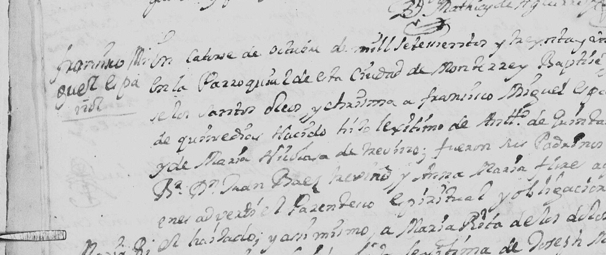
  <figcaption>Monterrey cathedral, Bautismos 1731–1768. The margin reads <strong>"Francisco Miguel Quintanilla, español."</strong> The entry: "En catorce de octubre de mil setecientos y treinta y uno… bapticé… a Francisco Miguel, español, de quince días nacido, <strong>hijo legítimo de Antonio de Quintanilla y de María Nicolasa de Treviño</strong>." Fifteen days old, so born about 29 September 1731. His godfather was a priest, Bachiller Don Juan Báez Treviño — his mother's kin. <a href="documents/francisco-miguel-baptism-1731-page.jpg">Full page here.</a></figcaption>
</figure>

<p>When I first read that, I wrote it up as if the chain had grown. It hadn't. It proved that a Francisco Miguel born in 1731 was Antonio's son — but my own line only reached a <strong>"Don Miguel Quintanilla,"</strong> named as Dámaso's grandfather in the 1813 baptism. Nothing said those two were the same man. What I actually had was an island of proven ground floating above the break, and I spent a day describing it as a bridge. The record that turned it into one came later, and from a different parish.</p>

<h2>The wedding at Cadereyta, and the man standing at the back</h2>
<p>First, though, the wrong turn. Antonio's own 1729 wedding at Monterrey is the strangest document in this family, and it refused to do the one job I needed.</p>

<figure>
  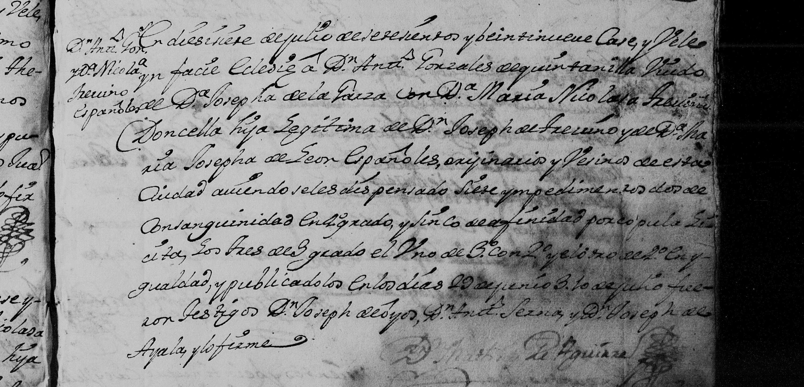
  <figcaption>Monterrey cathedral, 17 July 1729: "casé y velé in facie Ecclesiae a <strong>Don Antonio Gonzales de Quintanilla, viudo de Doña Josepha de la Garza</strong>, con <strong>Doña María Nicolasa Treviño, doncella, hija legítima de Don Joseph de Treviño y de Doña María Josepha de León</strong>… aviéndoseles dispensado <strong>siete ympedimentos: dos de consanguinidad en 4.º grado, y sinco de afinidad por cópula ilícita — los tres de 3.º grado, el uno de 3.º con 2.º, y el otro de 2.º en ygualdad</strong>… y publicados en los días 29 de junio, 3 [y] 10 de julio. Fueron testigos Don Joseph de Ayos, Don Antonio Serna y Don Joseph de Ayala."" <a href="documents/antonio-marriage-1729-page.jpg">Full page here.</a></figcaption>
</figure>

<p>Read that clause again, because I got it wrong the first time and the correct version is worse. I originally transcribed "two of consanguinity in the third degree." Going back to the page at full magnification, it says <strong>fourth</strong> degree — and it goes on to itemise the other five, which I had simply left out.</p>

<p>Here is what the priest actually wrote. Seven impediments dispensed: <strong>two of consanguinity in the fourth degree</strong>, and <strong>five of affinity by illicit intercourse — three of them in the third degree, one of the third with the second, and one of the second in equality</strong>.</p>

<p>Those numbers are not decoration. Church law counted kinship in degrees out from a shared ancestor, and each impediment records <em>one specific relationship</em> that had to be individually dispensed. So the two consanguinity items mean Antonio and Nicolasa were themselves cousins — <strong>third cousins, along two separate lines</strong>, which is why it counts twice.</p>

<p>The five others are of a different kind. "Affinity by illicit intercourse" is the Church's term for the bar created between a man and his lover's blood relatives. Five of them, each graded, means the record is stating that Antonio had had sexual relationships with <strong>five women who were relatives of the woman he was now marrying</strong> — and the degrees say how close: one of them a <strong>first cousin</strong> of the bride, one a first cousin once removed, and three second cousins.</p>

<p>He was a widower twice over by then. Nicolasa was recorded as a maiden, <em>doncella</em>. He had to declare all of it, under oath and on the record, because concealing an impediment could get the marriage voided later. And having declared it, the bishop dispensed all seven, the banns were read on 29 June and 3 and 10 July, three gentlemen stood as witnesses, and on the seventeenth the priest married them anyway.</p>

<p>That is my great-great-great-great-great-grandparents' wedding. I'll add one thing rather than leave it as an anecdote about a man: <strong>there are five women in that sentence</strong>, unnamed, who were somebody's daughters and are as much part of this family's story as he is. The document records them only as impediments.</p>

<p>It gave me a new couple — Nicolasa's parents, <strong>Don Joseph de Treviño and Doña María Josepha de León</strong> — but not what I needed. Because Antonio was remarrying as a widower, the priest didn't record <em>his</em> parents, only the bride's. So I went and found the earlier wedding, at Cadereyta in 1723, hoping he'd been a bachelor then.</p>

<figure>
  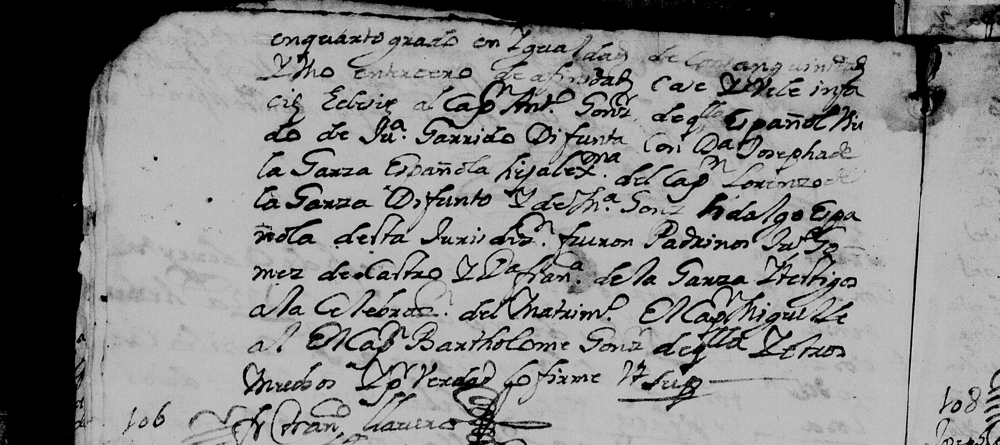
  <figcaption>San Juan Bautista, Cadereyta Jiménez, February 1723, entry 105: "…casé y velé in facie Ecclesiae al <strong>Capitán Antonio González de Quintanilla, español, viudo de Juana Garrido, difunta</strong>, con <strong>Doña Josepha de la Garza</strong>, española, hija legítima del Capitán Lorenzo de la Garza, difunto, y de Doña María González Hidalgo… Testigos a la celebración del matrimonio: el Capitán Miguel de […], <strong>el Maestre de Campo Bartholomé González, de esta villa</strong>, y otros muchos." <a href="documents/antonio-marriage-1723-continuation-page.jpg">Full page here.</a></figcaption>
</figure>

<p>He was a widower there too — of a woman called <strong>Juana Garrido</strong>, who nobody in this family knew existed. Antonio married three times: Juana Garrido, then Josefa de la Garza in 1723, then Nicolasa Treviño in 1729. Three weddings, and because he was a widower at every one of them, no priest ever wrote down his parents.</p>

<p>So I reached for the witnesses instead. Standing at that 1723 wedding was <strong>"el Maestre de Campo Bartholomé González, de esta villa"</strong> — the right name, a senior military rank, the right town. I wrote here that I'd bet the house on it being his father. <strong>I'd have lost.</strong> Antonio's father was buried in November 1713, nine years before that wedding. The man at the back of the church was some other Bartolomé — a brother, a cousin, a nephew carrying a grandfather's name, which is exactly what this family did over and over. It was a good guess, it was properly labelled a guess, and it was wrong.</p>

<h2>The two records that closed it</h2>
<p>What actually worked was duller: I went back to two images I had written off as undownloadable, and tried them again. Both came down on the first click. The block I'd recorded had never been a block at all — just an intermittent failure I'd diagnosed as a wall and stopped pushing on.</p>

<p>The first is the marriage I needed to identify "Don Miguel." It is not in Monterrey at all; it's at San Mateo del Pilón, the parish that is now Montemorelos.</p>

<figure>
  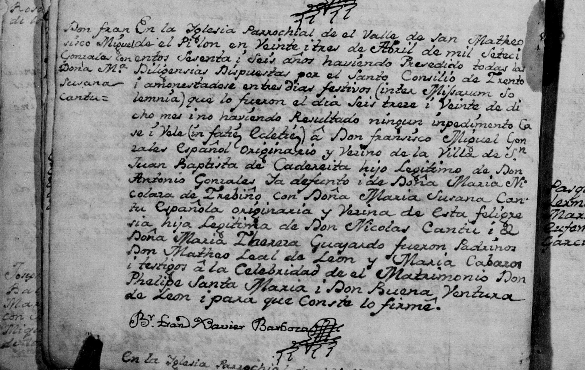
  <figcaption>San Mateo del Pilón (Montemorelos), Matrimonios 1712–1789, 23 April 1766. Margin: <strong>"Don Fransisco Miguel Gonzales con Doña Mª Susana Cantú."</strong> The entry: "…casé i velé (in facie Ecclesiae) a <strong>Don Fransisco Miguel Gonzales, español, originario y vezino de la Villa de San Juan Baptista de Cadereita, hijo legítimo de Don Antonio Gonzales, ya defunto, i de Doña María Nicolasa de Treviño</strong>, con <strong>Doña María Susana Cantú, española… hija legítima de Don Nicolás Cantú i de Doña María Theresa Guajardo</strong>." Signed Br. Francisco Xavier Barbosa. <a href="documents/francisco-miguel-cantu-marriage-1766-page.jpg">Full page here.</a></figcaption>
</figure>

<p>That one entry does four things at once. It marries <strong>Francisco Miguel to Susana Cantú</strong> — and Dámaso's 1813 baptism names his grandparents as "Don Miguel Quintanilla y Doña Susana Cantú." Same couple, so the man in my chain and the boy baptized in 1731 are one person, and the island becomes a bridge. It names his parents as <strong>Antonio, already dead, and María Nicolasa de Treviño</strong> — the exact couple from the 1731 baptism. It puts him <strong>"originario y vecino de Cadereyta,"</strong> the town Antonio married into in 1723, which is the corroboration I'd been trying to get out of a witness list. And it hands over a new set of in-laws, <strong>Don Nicolás Cantú and Doña María Theresa Guajardo</strong>.</p>

<p>The honest wrinkle: the 1813 priest wrote "Miguel Quintanilla," the 1766 priest wrote "Francisco Miguel Gonzales." Both are this family — Antonio himself is "Antonio González de Quintanilla" in 1723 and "Antonio de Quintanilla" in 1731, and men here dropped the "Francisco" in daily use. Same wife's name, same district, same generation. I'm calling it <span class="badge proven">Proven</span> and telling you where the join is.</p>

<p>The second record is Antonio's own baptism, and it simply says it outright.</p>

<figure>
  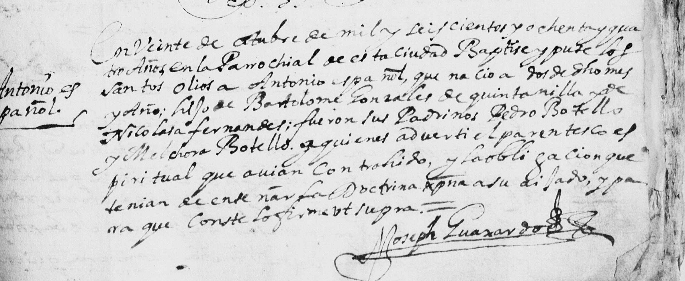
  <figcaption>Monterrey cathedral, Bautismos 1668–1731, folio 36 — filmed upside down, which is part of why it sat unread. Margin: <strong>"Antonio, español."</strong> The entry: "En veinte de octubre de mil y seiscientos y ochenta y quatro años, en la Parrochial de esta ciudad, baptisé y puse los santos olios a <strong>Antonio, español, que nació a dos de dicho mes</strong>… <strong>hijo de Bartolomé Gonzales de Quintanilla y de Nicolasa Fernandes</strong>; fueron sus padrinos Pedro Botello y Melchora Botello…" Signed Joseph Guaxardo. Born 2 October 1684, baptized on the 20th. <a href="documents/antonio-baptism-1684-page.jpg">Full page here.</a></figcaption>
</figure>

<p><strong>"Hijo de Bartolomé Gonzales de Quintanilla y de Nicolasa Fernandes."</strong> That is the couple married in this same cathedral on 20 December 1672, in the entry further down this page. No inference, no witness list, no betting the house. The priest wrote it down in 1684 and it waited three hundred and forty-two years, upside down, on a roll of microfilm.</p>

<h2>The godfather was her father</h2>
<p>One join in that ladder was still a name-match rather than a document: the 1813 baptism called Dámaso's grandfather "Don Miguel Quintanilla," the 1766 marriage called the groom "Don Fransisco Miguel Gonzales," and I was matching them on the wife. So I went looking for their first child, and he was baptized eleven and a half months after the wedding.</p>

<figure>
  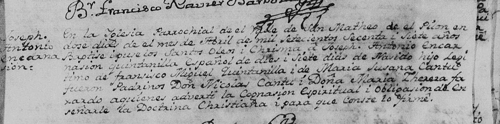
  <figcaption>San Mateo del Pil&oacute;n (Montemorelos), Bautismos 1756&ndash;1773. Margin: <strong>"Joseph Antonio Encarnasi&oacute;n."</strong> The entry: "En la Yglesia Parrochial de el Valle de San Matheo de el Pil&oacute;n, en dose d&iacute;as de el mes de abril de mil setecientos secenta i siete a&ntilde;os, baptis&eacute; i puse los Santos Oleos i Chrisma a <strong>Joseph Antonio Encarnasi&oacute;n Quintanilla, espa&ntilde;ol, de dies i siete d&iacute;as de nasido, hijo leg&iacute;timo de Fransisco Miguel Quintanilla i de Mar&iacute;a Susana Cant&uacute;</strong>; fueron padrinos <strong>Don Nicol&aacute;s Cant&uacute; i Do&ntilde;a Mar&iacute;a Theresa Guajardo</strong>&hellip;" Signed Br. Francisco Xavier Barbosa. Seventeen days old, so born 26 March 1767. <a href="documents/jose-antonio-baptism-1767-page.jpg">Full page here.</a></figcaption>
</figure>

<p>That is Dámaso's father, named in full — <strong>José Antonio Encarnación</strong> — and named as the legitimate son of Francisco Miguel and Susana. The name-match is gone; it's a register entry now.</p>

<p>Two details in it are worth pausing on. The godparents, <strong>Don Nicolás Cantú and Doña María Theresa Guajardo</strong>, are the bride's own parents, exactly as the 1766 marriage named them — the baby's maternal grandparents standing at the font. And the priest is <strong>Br. Francisco Xavier Barbosa</strong>, the same man who had married the couple the year before and whose flourish of a signature runs down both pages. The same hand married them and baptized their first son.</p>

<p>The family then moved north-west to <strong>China, Nuevo León</strong>, and the register there carries the rest of them: a daughter María Gertrudis buried in 1806, a son José Darío married in 1809, a son Francisco married in 1814 — all of them "hijo de Don Miguel Quintanilla y Doña Susana Cantú." That is the parish where Dámaso was baptized in 1813, and where this line stayed.</p>

<h2>The will</h2>
<p>Earlier today I wrote on this page that the last link might never be closable. I'd checked when Monterrey's church books begin — 1667 for marriages, 1668 for baptisms — and the man I needed was born around 1654, before any of them. His baptism doesn't exist. I said so plainly and I meant it.</p>

<p>I was looking in the wrong building. Church registers are not the only place a colonial Spaniard wrote down who his parents were. He also did it when he made his will — and in a frontier town with no notary, wills were made before the <em>alcalde ordinario</em> and bound into the town's own protocol books. Those books survive, in the Archivo Municipal de Monterrey, and in 1973 the archive's own director, <strong>Israel Cavazos Garza</strong>, published a catalogue summarising every one of them.</p>

<p>Entry 1272, volume IX, folio 400, dated <strong>14 October 1712</strong> — thirteen months before he died:</p>

<blockquote>
<p>"Testamento del capitán <strong>Bartolomé González de Quintanilla</strong>, vecino «de esta ciudad de Santa María de Monterrey», <strong>hijo legítimo del capitán Bartolomé González y de doña Ana de Quintanilla, difuntos</strong>, vecinos que fueron de este reino… Declara ser casado con <strong>doña Nicolasa Fernández</strong>. Hijos: <strong>Bartolomé, Francisco y Antonio</strong>, casados los dos primeros y <strong>viudo el último</strong>; y Agustina, casada con el capitán Juan de León; María, con Teodoro de la Garza; Juana, con Diego Laruel Fernández de Castro; Ana, difunta, mujer que fue de Lázaro de los Santos."</p>
</blockquote>

<p>There it is, in his own words, dictated to the alcalde: <strong>son of Captain Bartolomé González and Doña Ana de Quintanilla.</strong> The wife matches the 1672 marriage I'd read. The sons match. And one detail I did not expect — <strong>"viudo el último," Antonio a widower already in 1712.</strong> That is Juana Garrido, the wife nobody knew existed until I found her name in a Cadereyta register a day ago, confirmed dead eleven years before that record was written, from a completely different archive.</p>

<p>His widow made her own will thirteen years later, and it says the same things from the other side.</p>

<blockquote>
<p>Entry 1631, volume XI, folio 324, <strong>22 October 1725</strong>: "Testamento de <strong>doña Nicolasa Fernández de Tijerina, viuda del alférez Bartolomé González de Quintanilla</strong>… <strong>hija legítima de Gregorio Fernández de Tijerina y de doña Beatriz González</strong>… Hijos: Bartolomé, Francisco, Antonio, María, Agustina, Juana y Ana de Quintanilla… Declara que lo suyo lo ha administrado <strong>Antonio, su hijo</strong>… Nombra por albacea a Antonio, su hijo."</p>
</blockquote>

<p>An old woman in 1725, dictating her will, naming my ancestor as the son who runs her affairs and will bury her. She also names her own parents, which hands me another couple: <strong>Gregorio Fernández de Tijerina and Doña Beatriz González</strong> — and Gregorio is the same alcalde before whom Ana de Quintanilla made <em>her</em> will in 1684. These families were tangled at every level.</p>

<p>And then, going back through the same catalogue entry by entry, I found the thing that ties it shut. <strong>Eleven months later he changed his mind about where to be buried.</strong></p>
<blockquote>
<p>Entry 1306, volume X, folio 64: "El Cap. <strong>Bartolomé González de Quintanilla</strong>, vecino de esta ciudad, <strong>«enfermo en cama»</strong>, revoca la cláusula de su testamento otorgado a 14 de octubre de 1712… referente a su entierro, y <strong>dispone ser sepultado en el convento de San Francisco, por ser hermano de la Orden Tercera</strong>. Monterrey, 15 de septiembre de 1713."</p>
</blockquote>
<p>Sick in bed, on 15 September 1713, he revoked one clause of the will — the burial — and asked instead to be laid in the Franciscan convent, because he was a lay brother of the Third Order. <strong>He died eight weeks later, on 11 November 1713. And the burial register says he was buried in the Convento de San Francisco.</strong></p>
<p>That closes the loop completely. A will that names his parents; a codicil eight weeks before death changing where he'd lie; and a burial entry, from an entirely different book, recording that he got what he asked for. Whatever doubt was left about whether the man in the will and the man in the grave were the same person is gone.</p>

<p>The same catalogue, read properly, gave up a good deal more of him: he was <strong>alférez real</strong> of Monterrey; he rented thirty-five stock ranges out on the Pesquería Grande from the Jesuits of Querétaro, "where the said alférez real currently lives"; in 1710 he paid out dowries for two daughters, 1,064 pesos for Juana and 819 for Ana; and in 1712 he bought two slaves, a married couple called José and Isabel — the same Isabel his widow still owned, and named, in her will thirteen years later. Two of his sons, Francisco and Antonio, turn up again and again running his affairs and then hers.</p>

<p>One entry I did not expect. On 22 April 1713, in the Pilón valley, he stood as a witness to a widow's power of attorney — and signing alongside him was <strong>"el alférez Juan Bautista Chapa."</strong> The Chapa family comes into this page from a completely different direction, through Dámaso's mother four generations later. Here are the two lines in the same room on the same afternoon, seventy years before they'd marry into each other.</p>

<h2>And then his brother's will turned up</h2>
<p>At the 1672 wedding, one of the witnesses was a <strong>Nicolás de Quintanilla</strong>. I'd assumed he was the groom's brother because it made sense of the surname, and I said so on this page with the word "presumably" doing a lot of work. He left a will too, and it was translated into English in the 1970s by researchers at the University of Texas, sitting in a digitised rare-books collection where no genealogist would think to look for a Monterrey document.</p>
<blockquote>
<p>"<strong>Will and Testament of Nicolas Quintanilla</strong>, resident and native of this city, <strong>legitimate son of Bartolome Gonzalez and Ana de Quintanilla, both deceased</strong>. It is his will to be buried, with novenary, <strong>at the parish where the body of his mother was buried</strong>. He stated to be married to <strong>Beatriz Hernandez, legitimate daughter of Capt. Gregorio Fernandez and of Beatriz Gonzalez</strong>, both deceased. Children: Nicolas, Ana, Gregorio, Miguel and Juan."</p>
</blockquote>
<p>Monterrey, 13 January 1689. Same parents, stated independently, seventeen years before his brother's will and by a different man to a different official. <a href="documents/Nicolas-Quintanilla-will-1689_UTSA-Residents-of-Texas-v3-p104.pdf">The page is here.</a></p>
<p>And look who he married. <strong>Beatriz</strong>, daughter of Gregorio Fernández de Tijerina and Beatriz González — the same couple who, per the 1725 will, were the parents of <strong>Nicolasa</strong>, who married his brother Bartolomé. <strong>Two brothers married two sisters.</strong> Which is exactly what happened again two generations later, when Antonio and his own brother married two Garrido sisters. This family did it twice.</p>
<p>The small human detail I keep going back to: he asked to be buried in the parish "where the body of his mother was buried." That is Ana, dead five years by then, in the entry I read on the cathedral's own page.</p>

<h2>So where does the ladder break now?</h2>
<p>Not in my direct line any more. <strong>Every generation from me back to the man who was born in Morón de la Frontera and buried in Monterrey in 1672 is now on a document I have read.</strong></p>
<p><strong>Proven, rung by rung:</strong> me → my mother Eleanor → Manuel → Hector Sr. (1917 marriage) → Inocencio (1924 death) → Dámaso (1813 baptism) → José Antonio Encarnación (1767 baptism) → Francisco Miguel (1766 marriage) → Antonio (1684 baptism) → Bartolomé González de Quintanilla the younger (1712 will) → <strong>Bartolomé González of Morón and Ana de Quintanilla</strong>.</p>
<p>The one caveat I'll hold onto: for that top rung I have read Cavazos Garza's published summary of the will, not the original page in the protocol book. He was the archive's director and he gives the exact volume and folio, so this is a proper citation rather than somebody's tree. But the manuscript itself is still sitting in Monterrey, and I'd like to see it.</p>
<p><strong>The question has moved up a floor.</strong> What I cannot yet prove is <strong>Ana's own parents</strong> — that she was the daughter of Lucas García and Juliana de Quintanilla, and therefore that the founders of Monterrey and everything behind them are mine. That is now the joint. And it has an obvious answer waiting: <strong>Ana made a will too.</strong> Her 1684 burial says so. It will be in the same protocol books, catalogued in the volume covering 1599–1700 — the one volume of the six that isn't free online. A library copy settles it.</p>

<h2>The founder's daughter, in the cathedral's own book</h2>
<p>These three came out of the Monterrey cathedral registers on FamilySearch, and they turn the top of this line from other people's scholarship into something I've read myself. First, Bartolomé's burial, in the 1672 pages of the book of the dead:</p>
<figure>
  
  <figcaption>Catedral de Monterrey, Defunciones 1668–1752, under the year-heading 1672: "En dos de febrero de mil y seiscientos y setenta y dos años murió Bartolomé González, español, <strong>natural de Morón en los Reinos de Castilla</strong>, casado con <strong>Ana de Quintanilla</strong>, española; confesó y recibió los Santos Sacramentos; no testó; se enterró de limosna en esta Parroquial." Born in Morón, married to Ana de Quintanilla, buried as a charity case without a will. The Spain anchor, in the priest's hand. <a href="documents/bartolome-gonzalez-burial-1672.jpg">Full page here.</a></figcaption>
</figure>
<p>Ten months later his son married, and the entry says something the trees only hinted at:</p>
<figure>
  
  <figcaption>Catedral de Monterrey, Matrimonios 1667–1800, page 58: "En veinte de diciembre de 1672 desposé por palabras de presente a Bartolomé de Quintanilla y Nicolasa Fernández de la Garza, <strong>en virtud de dispensa del Ilustrísimo Sr. Obispo de este Reino en cuarto grado de consanguinidad</strong>… fueron testigos <strong>Lucas García</strong>, Joseph de la Cruz y <strong>Nicolás de Quintanilla</strong>." The bishop had to dispense them because they were cousins, which is exactly what two González-Hidalgo mothers would produce. His uncle Lucas García, the founder's son, and his brother Nicolás stood as witnesses. <a href="documents/quintanilla-tijerina-marriage-1672.jpg">Full page here.</a></figcaption>
</figure>
<p>And Ana herself, twelve years after that, with the whole family standing round the entry:</p>
<figure>
  
  <figcaption>Same book of the dead, 1684: "En ocho de julio de 1684 murió <strong>Ana de Quintanilla, española, viuda que fue de Bartolomé González</strong>… enterróse en la Parroquial de esta ciudad con vigilia y misa de cuerpo presente; <strong>testó ante el Capitán Gregorio Fernández, alcalde ordinario</strong>… fue su albacea <strong>Joseph González de Quintanilla, su hijo</strong>." She made a will before Gregorio Fernández de Tijerina, the town's alcalde that year and her son's father-in-law, and her executor was a son already calling himself González de Quintanilla. The founder's daughter, the widow of the man from Morón, and the surname, all in one entry. <a href="documents/ana-quintanilla-burial-1684.jpg">Full page here.</a></figcaption>
</figure>

<h2>A petition to a bishop, and four generations under oath</h2>
<p>Those dispensation files turned out to be worth hunting on their own account. To marry a cousin you had to petition the bishop — and to prove <em>how</em> closely you were related, you had to write out the family tree. So these documents contain sworn pedigrees, filed by people who had every reason to get them right.</p>
<p>One of them is my family's. <strong>Monterrey, 15 January 1693</strong>, before Don Felipe Galindo, Bishop of Guadalajara, on his visitation. The petitioner is <strong>Bartolomé de Quintanilla</strong> — Antonio's elder brother — asking to marry Antonia García de Sepúlveda, to whom he was related in the third degree with the fourth. In his own voice:</p>
<blockquote>
<p>"<strong>Bartolomé de Quintanilla</strong>, vecino de esta ciudad, <strong>hijo legítimo del Cap[itá]n Bartolomé González de Quintanilla y de Nicolasa Fernández</strong>… Que procede dicho parentesco de que el <strong>Capitán Blas de la Garza, mi bisabuelo</strong>, fue hermano legítimo de Francisco de la Garza, abuelo de la dicha contrayente. Y del dicho <strong>Blas de la Garza y de Beatriz González, mis bisabuelos</strong>, procedió de legítimo matrimonio <strong>Beatriz González, que fue casada con el Capitán Gregorio Fernández, mis abuelos</strong>, de quienes procedió <strong>la dicha Nicolasa Fernández, mi madre</strong>."</p>
</blockquote>
<p>Read that as a ladder and it is mine too, because his mother is my ancestor Antonio's mother:</p>
<p><strong>Capitán Blas de la Garza × Beatriz González → Beatriz González × Capitán Gregorio Fernández de Tijerina → Nicolasa Fernández → Antonio → …→ me.</strong></p>
<p>I had that descent on this page already, in the section below, hedged as <span class="badge probable">Probable</span> and resting on other people's compiled trees. Here it is instead as a sworn statement to a bishop in 1693, by a man describing his own grandparents and great-grandparents. <strong>Blas de la Garza Falcón</strong> was a son of Marcos Alonso de la Garza y del Arcón, said to be of Lepe in Huelva — though when I went and checked that, it did not hold up, and I've set out why further down. That link is no longer a guess.</p>
<p>I first read that off a machine transcript, and said here that I was holding it short of Proven until I'd seen the page. I've now seen the page. It is <strong>image 346</strong> of that 1,179-image bundle, film 103042103, and it carries the seal of the Archdiocese of Guadalajara in the margin.</p>

<figure>
  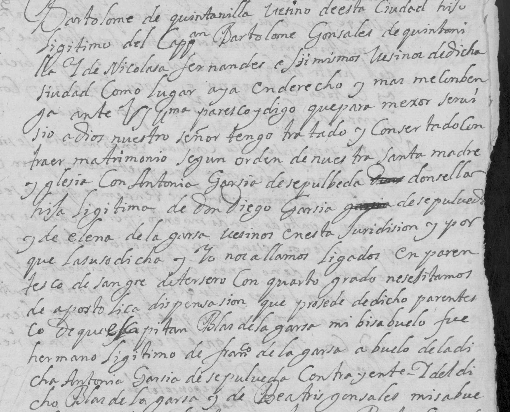
  <figcaption>The petition itself, in the notary's hand: "<strong>Bartolomé de Quintanilla, vecino de esta ciudad, hijo legítimo del Cap.<sup>n</sup> Bartolomé Gonsales de Quintanilla y de Nicolasa Fernandes</strong>… tengo tratado y consertado contraer matrimonio… <strong>con Antonia García de Sepúlveda, donsella, hija legítima de Don Diego García de Sepúlveda y de Elena de la Garsa</strong>… y porque la susodicha y yo nos hallamos ligados en parentesco de sangre <strong>de tersero con quarto grado</strong>, nesesitamos de apostólica dispensasión, que prosede de dicho parentesco <strong>de que el Capitán Blas de la Garsa, mi bisabuelo, fue hermano legítimo de Fran.<sup>co</sup> de la Garsa</strong>…" <a href="documents/dispensation-1693-monterrey-page.jpg">Full page here.</a></figcaption>
</figure>

<p>Every name in that ladder is now read off the manuscript rather than taken from a machine: <strong>Blas de la Garza and Beatriz González, his great-grandparents; their daughter Beatriz married to Captain Gregorio Fernández; and "la dicha Nicolasa Fernandes, mi madre."</strong> The header on the same page reads "Monterrey y Henero 15 de 1693," and the degree, "3.º con 4.º," is written in the top corner.</p>

<p>So this one graduates. <span class="badge proven">Proven</span> — a sworn petition, read on the page, carrying my descent from one of the founding families four generations at a stroke.</p>
<p>What the petition does <em>not</em> do is help with Ana. The kinship it traces runs up the Garza side, through the bride's family, so it never goes near the Quintanilla mother's line. That question is still open.</p>

<h2>Blas de la Garza, and what he owned in 1663</h2>
<p>Having proved that descent, I went looking for the man himself — and he turns out to be one of the better-documented people in the whole kingdom. Not through genealogy sites, but through <strong>Eugenio del Hoyo's <em>Historia del Nuevo Reino de León, 1577–1723</em></strong>, the standard scholarly history, which the Fondo Editorial de Nuevo León gives away as a free PDF and which footnotes almost every sentence to a document in the Monterrey municipal archive.</p>

<p><strong>1626.</strong> In the whole Nuevo Reino de León, the only place inhabited by Spaniards is still the city of Monterrey. Within eight leagues of it there are exactly <strong>seven estancias</strong>. The first del Hoyo lists is "<strong>la de San Francisco, de Blas de la Garza y Alonso de Treviño</strong>." My ancestor holds a seventh of the settled countryside of a kingdom.</p>

<p><strong>1634.</strong> The two of them declare that their hacienda of San Francisco had supplied Monterrey and the town of Cerralvo "<em>en muchos bastimentos y ganados… y que habían venido a multiplicarla de tal suerte, que estaba a punto de ser muy poderosa</em>" — they had built it up to the point of being very powerful indeed.</p>

<p><strong>25 March 1663.</strong> This is the one I keep re-reading. The <em>encomenderos</em> of Monterrey are summoned to pass muster with their arms and horses, standing in the street outside the town hall. Del Hoyo prints the roll. The first man called is mine:</p>
<blockquote>
<p>"El capitán <strong>Blas de la Garza</strong>: dos ternos de armas, dos chimales, dos arcabuces, dos caballos, pólvora y balas y dos cotas."</p>
</blockquote>
<p>Two sets of horse armour, two shields, two harquebuses, two horses, powder and ball, and two coats of mail. Then the rest file past him one by one — and the roll is a roll-call of this page: "el capitán <strong>Blas de la Garza Falcón, alcalde ordinario</strong>; el capitán Juan de la Garza Falcón, regidor; el capitán <strong>Gregorio Fernández, el Mozo</strong>, regidor…" That second name is my other great-grandfather-line, the Tijerinas, standing in the same street on the same morning, twenty-two years before the two families married.</p>

<p>Del Hoyo also names him, with Bernabé de las Casas, among the richest men in the kingdom, and notes in passing that a merchant called Francisco de Iribe y Vergara married "a daughter of Blas de la Garza" and rose to be alcalde ordinario on the strength of it. He was dead by February 1669; his widow Beatriz González was buried on 10 May 1670, the entry calling her simply "<em>viuda del capitán Blas de la Garza</em>."</p>

<h2>June 1686: the French are on the coast</h2>
<p>One more thing came out of reading the seventeenth-century chronicle instead of reading about it. On <strong>8 June 1686</strong> the Viceroy of New Spain wrote to the governor of Nuevo León. Royal officials at Veracruz had reported that <strong>the French were settled at the Bay of Espíritu Santo</strong> — six or seven days' journey from the kingdom — and he was to go and find out whether it was true.</p>

<p>This is the hunt for <strong>La Salle's lost colony</strong>, the thing that would eventually put Spain into Texas. A council met at Monterrey on the 11th. The expedition was set for the 25th: thirty soldiers out of Monterrey under Captain Nicolás Ochoa, twenty more raised at Cadereyta under Captain Antonio Leal.</p>

<p>On <strong>27 June 1686</strong>, at Cadereyta, the two companies formed up and rode past the governor one by one while he read out the commissions and handed them over himself. The chronicle lists every man in the file. Partway down:</p>

<blockquote>
<p>"…Joseph de la Garza, <strong>Alonso García de Quintanilla</strong>, Marcos Flores, Alonso de Olivares, <strong>Andrés Fernández Tijerina</strong>, Nicolás de Montalvo, Juan Pérez de la Garza…"</p>
</blockquote>

<p>I want to be careful here, because it would be easy to overclaim. <strong>I cannot prove either of those two men is my direct ancestor.</strong> What I can say is that they carry two of this page's surnames — García de Quintanilla and Fernández de Tijerina — in the right town, in the right decade, out of a settler population you could fit in a large hall. And there is one small echo worth noting: when Nicolasa Fernández de Tijerina made her will at Monterrey in 1725, one of the witnesses she called in was a man named <strong>Andrés Fernández de Tijerina</strong>.</p>

<p>Either way, this is the world these people lived in. Not a quiet farming valley — a frontier where the Viceroy writes in June and by the end of the month your neighbours are in the saddle riding north to find out whether the French have landed.</p>

<h2>Her brother, and everything he owned</h2>
<p>Reading the whole protocol catalogue end to end — five hundred and three entries touch this family — turned up the will of <strong>Andrés Fernández de Tijerina</strong>, made at Monterrey on 8 November 1725, three weeks after Nicolasa made hers. He declares himself "<em>natural y originario de esta ciudad, hijo legítimo de <strong>Gregorio Fernández de Tijerina y de Beatriz González</strong></em>."</p>
<p>Those are Nicolasa's parents. <strong>He is her brother</strong> — and he is the same Andrés Fernández de Tijerina she called in as a witness to her own will a fortnight earlier. So her parentage now rests on three separate documents: her son's sworn petition of 1693, her own will, and her brother's.</p>
<p>His will is also the closest thing I have to a photograph of how these people lived. He asks to be buried in the parish church, <strong>shrouded in the habit of St Francis</strong>, with a sung mass. Then the inventory:</p>
<blockquote>
<p>"Su casa, compuesta de sala y dos aposentos, de piedra; la hacienda de San Juan Bautista… tres yuntas, un toro, herramienta; <strong>cuatro cuadros de dos varas</strong>; mesa, banca, caja y escritorio; una manada de yeguas, 6 caballos, 9 machos; 60 cabezas de ganado menor; una fanega de maíz, sembrado; un cañaveral, un molinillo nuevo, y dos peroles. En Monterrey, un solar, <strong>espada, escopeta, silla, freno y espuelas</strong>. Declara ser casado con <strong>Josefa de la Garza, quien trajo en dote 450 pesos</strong>."</p>
</blockquote>
<p>A stone house of one hall and two rooms. Three yoke of oxen and a bull. Four pictures, two <em>varas</em> square. A table, a bench, a chest and a writing desk. A herd of mares, six horses, nine mules, sixty head of small stock, a field of maize in the ground, a cane patch, a new little mill and two coppers. And in town: a building plot, and a sword, a shotgun, a saddle, a bridle and spurs.</p>

<h2>The estancia, seventy-four years later</h2>
<p>One more thread closes neatly. In the 1626 survey, one of the seven estancias around Monterrey is "<strong>la de San Francisco, de Blas de la Garza y Alonso de Treviño</strong>." In <strong>November 1700</strong> a deed records Micaela de la Garza selling her share of the farmland and water "<strong>en la hacienda de San Francisco</strong>," which she held as heir of Captain Miguel de la Garza Falcón and Doña Gertrudis de Rentería, her parents — "<em>quienes a su vez, las hubieron del <strong>capitán Blas de la Garza y Beatriz González, sus padres</strong></em>."</p>
<p>The same ground, the same family, three generations later, being divided up among cousins because it had never been formally partitioned. It sold for 150 pesos in pieces of eight.</p>
<p>And it settles one wrinkle. There is a will of 1701 by a <strong>Captain Andrés González</strong>, "native of the town of Tepetitlán, legitimate son of Captain Bartolomé González and <strong>Isabel Gómez</strong>," who calls Bartolomé González de Quintanilla "<em>mi hermano</em>" — my brother. Different mother. For a while that looked like a contradiction; it isn't. The Morón immigrant married twice: Isabel Gómez back in Tepatitlán, Jalisco, and then <strong>Ana de Quintanilla</strong> at Monterrey. Andrés is by the first wife, mine by the second. They were half-brothers, and "brother" is what people called each other.</p>

<h2>What Monterrey actually was</h2>
<p>It is worth stopping to say how small this place was, because the documents above make it sound grander than it was. On <strong>4 September 1626</strong> the incoming governor had a sworn house-by-house survey taken. Del Hoyo prints it. Thirty years after the founding, the city of Monterrey consisted of:</p>
<ul>
  <li><strong>Twenty-seven houses</strong>, not counting the convent. Twelve of them on the north bank of the river.</li>
  <li>They stood scattered, with no shared walls. The document says there were <strong>no streets</strong>, no commerce "nor any manner of it," and no <em>república</em>.</li>
  <li><strong>Forty-eight people</strong> lived in them, not counting children — ten married couples, six bachelors, three widowers, two widows, four free mulattoes married to Indian women, one Indian woman married to a Spaniard, a mestizo and a mestiza, three married soldiers.</li>
  <li>The seven estancias outside — <strong>one of them my ancestor's</strong> — held another forty-two.</li>
  <li>Walls of adobe under flat earth roofs; some thatch; some plain <em>jacales</em>. A Franciscan convent with a font, a strong tower and good bells. <strong>No parish church yet. No royal buildings. No jail.</strong> The governor lived in a room with seven windows beside the convent.</li>
</ul>
<p><strong>About ninety people.</strong> That is the whole city, and my family holds a seventh of the countryside around it.</p>

<p>And it was a place at war. The kingdom was <em>tierra de guerra viva</em> — live war country — which meant its inhabitants were obliged to be permanently soldiers, armed and provisioned at their own cost, and in exchange <strong>paid no direct taxes</strong>. There is an order from Monterrey dated <strong>27 March 1657</strong> which tells you everything: on pain of a ten-peso fine, every resident was to attend the Maundy Thursday service and the Holy Week processions <strong>carrying his harquebus and whatever arms he had</strong> — and encomenderos were to bring their armour, though they were to keep one set back at home to guard the estancia. That is Holy Week: the whole town in church with their guns, and somebody left behind watching the house.</p>

<p>Alonso de León, who lived there, wrote that from the founding until 1613 people went whole months and sometimes whole years living on lampazo root, wild fruit and mezcal. Smallpox came through Cadereyta in November 1646 and killed more than five hundred people across the kingdom in a year. In 1636 a flood threw down all the houses and both churches and left the place a desert; the Río de la Silla carried off seven thousand sheep in a night, together with the boy who was herding them.</p>

<h2>José and Isabel</h2>
<p>There is a line in the 1712 will I have not dealt with yet, and I am not going to skip it. Among the property my ancestor left were "<strong>dos esclavos</strong>" — two slaves. Earlier that same year he had bought them: a bill of sale for <strong>"dos piezas de esclavos mulatos color claro, marido y mujer, que el varón se llama José y la hembra Isabel,"</strong> 500 pesos cash, <strong>from the Jesuit college of San Luis Potosí</strong>. Thirteen years later, Isabel is still there — named in his widow's will as "una esclava, mulata, llamada Isabel."</p>

<p>Some things worth being precise about, because vagueness here would be a kind of evasion.</p>
<p><strong>The word <em>piezas</em> means "pieces."</strong> It was a unit of account developed in the slave trade for converting human beings into standard measures so cargoes could be compared and taxed. By 1712 the strict fiscal sense had lapsed and it was clerical habit — which is worse, not better. It had become simply how you counted people you owned.</p>
<p><strong>The names are not theirs.</strong> Owners in Monterrey imposed generic saints' names; the documented lists for men run <em>Diego, Pedro, Juan, José</em> and for women <em>Teresa, Isabel, María</em>. José and Isabel are exactly the standard pair.</p>
<p><strong>This was not ordinary.</strong> One study, working from the Monterrey archive, identified <strong>thirty families in the whole seventeenth century</strong> that owned enslaved people — in a town of eighty-five adult householders. Slave-owning marked the top of that town: the governor, the chronicler Alonso de León, the alférez real, the big cattlemen. Owning people is one of the ways I know how far up my family sat.</p>
<p><strong>And the Jesuits sold them.</strong> This surprised me and it should be said plainly. The Society's own law allowed it: in 1592 the General in Rome licensed the Mexican province to sell enslaved people above the ordinary value ceiling, on the reasoning that they were <em>mobilia non pretiosa</em> — movable goods, not precious ones. In 1691, the provincial licensed the rector of the college at Guadalajara to sell any enslaved people of that college as he judged necessary, so that with the money others more useful might be bought. My ancestor's purchase, twenty-one years later, from a Jesuit college on the same frontier, is not an anomaly. It is the system working normally.</p>
<p><strong>The prices are the most eloquent thing in the whole archive.</strong> In mid-century Nuevo León an enslaved Black or mulatto person cost <strong>500 pesos</strong>. An enslaved Chichimeca Indian cost 100, then 60, and by 1662 <strong>fifteen pesos</strong>. On 3 July 1652, at the door of the governor's own house in Cerralvo, with the governor standing there and an Indian named Juan acting as crier, the labour of four girls and a boy was auctioned. The best bid was fifteen pesos each. An <em>alférez</em> took all five for seventy-five pesos.</p>
<p>I don't know what happened to José and Isabel. The records that would say are the ones nobody kept.</p>

<h2>Why he changed his will</h2>
<p>I said earlier that the codicil of September 1713 — the dying man moving his grave to the Franciscan convent "por ser hermano de la Orden Tercera" — was the document that shut the case. It is also, once you know what the Third Order was, a rather different act from the deathbed panic I first read it as.</p>
<p>The Third Order was for lay people living in the world: a rule, a year's novitiate, a sackcloth scapular and cord worn always under the clothes, meat given up three days a week, a fast every Friday. And a set of privileges that were worth real money and were litigated over for two centuries. Chief among them: <strong>a tertiary could choose his own burial place</strong>, and would be buried in the order's own ground. Without that, the default was the parish.</p>
<p>The brotherhood also owed him a death. Every brother was to say a mass within eight days, or fifty psalms, or fifty Aves. When one was known to be dying, word went round for the mass for the grace of a good death. At the funeral they walked out of the convent in double file by seniority, in the habit, each man carrying a candle from his own house and a rosary, and sang a response at the graveside.</p>
<p>And the rule itself instructed tertiaries to <strong>make their wills while in health</strong>. Which reframes the whole thing. He had professed at some earlier point — the novitiate alone took a year. His 1712 will, naming the parish, was simply out of date. Eight weeks from the end, sick in bed, he was not converting. He was correcting a stale clause to claim something he had already paid for.</p>

<h2>Where the Garza story stops being true</h2>
<p>Every account of this family, including an earlier version of this page, says that Blas's father was <strong>Marcos Alonso de la Garza y del Arcón, of Lepe in Huelva</strong>, who came to Monterrey with the founding party in 1596 and from whom every Garza in northern Mexico and Texas descends. I repeated it. Then I checked it, and I don't think it stands up.</p>
<ul>
  <li>Del Hoyo's 640-page history has a full onomastic index. <strong>Marcos Alonso de la Garza is not in it.</strong> The single "Marcos Alonso" in the whole book is a "Marcos Alonso el Mozo" who sold land in 1610 — no Garza, no Lepe.</li>
  <li>"Lepe" appears in that index once, at page 322. I looked. It is <strong>Baltasar Rodríguez, "natural de la villa de Lepe,"</strong> bidding for an office in Mexico City in 1604 — a different man in a different story. Anyone citing "del Hoyo" for the Garzas of Lepe has grabbed the wrong entry.</li>
  <li>The <strong>founding act of Monterrey, 20 September 1596</strong>, printed in full by del Hoyo, names the alcaldes, the regidores and the procurador. <strong>There is no Garza in it.</strong></li>
  <li>The seventeenth-century chronicle written by the men who actually lived there — Alonso de León and Juan Bautista Chapa — never mentions Marcos Alonso, and never mentions Lepe.</li>
  <li>The Spanish Wikipedia article that most people are ultimately quoting carries <strong>no citation at all</strong> on the Lepe sentence, and concedes elsewhere in its own text that his ancestry "<em>se ignora por no haber ninguna prueba documental</em>."</li>
  <li>There <em>is</em> a real 1565 passenger licence for a Marcos Alonso and Constanza de la Garza, residents of Lepe — but it is for <strong>Peru</strong>, as servants in someone's household, and the best-sourced family site on the line states flatly that our Marcos Alonso does not appear in the passenger catalogue at all.</li>
</ul>
<p>So I'm demoting it. <strong>Blas de la Garza is mine and he is real</strong> — I have him in a 1693 petition, in a 1663 muster roll, on a 1626 estancia. Who <em>his</em> father was is a hypothesis that has been copied between books and trees for forty years without anybody producing the document. It may well be right. It is not proven, and I'd rather say so than pass it on. <span class="badge probable">Probable at best</span></p>

<h2>The colonial web</h2>
<p>Once every rung had a name, I did what I hadn't been able to do before: follow the wives. In a colony of a few hundred people, every marriage is a door into another founding family, and behind most of those doors sits someone with a Wikipedia entry. All of this is the same grade as the chain above, <span class="badge probable">Probable</span>: tree profiles and published descendancies that agree with each other, not register pages I've read. But they agree remarkably well, and the shape of the story is not in doubt.</p>

<p><strong>Past 1596.</strong> Lucas García, the founder I've been calling our ancestor, turns out to be the founder's grandson. His mother was María Inés Rodríguez, the eldest daughter of <strong>Diego de Montemayor</strong>, the man who founded Monterrey on 20 September 1596 and served as its first alcalde. Montemayor was born in Málaga around 1528 and sailed from Seville on 17 December 1548; the passenger list survives, and reads "Diego de Montemayor, vecino de Málaga… lleva consigo a Inés Rodríguez, su mujer." He is also the man who, in 1581, ran his second wife through with his sword for her affair with the Portuguese captain Alberto del Canto, swore not to trim his beard until he'd had his revenge, and was cleared, because the law of the day allowed it. Lucas García's father was Baltasar Castaño de Sosa, a Portuguese "New Christian" who helped found Saltillo and was its alcalde in 1583. Lucas and his brother Diego Rodríguez rode into the Monterrey valley with their grandfather in 1596, and between them ran the town as alcalde eight times over the next thirty years. Bartolomé González, Ana's husband, was alcalde in 1648.</p>

<p><strong>Where the name comes from, one step further.</strong> Juliana Farías, the founder's wife, got "Quintanilla" from her own mother, María de Treviño Quintanilla, whose parents were Diego de Treviño and Beatriz de Quintanilla, a couple baptizing children in Mexico City in the 1560s. That couple matters more than their names suggest, because I kept running into them. Their daughter Juana married <strong>Marcos Alonso de la Garza y del Arcón</strong> of Lepe, in Huelva, the man every Garza in northern Mexico and Texas descends from, who came to Monterrey in 1596 with his wife and six sons. Two of those sons, Blas de la Garza Falcón and Alonso de Treviño, married two sisters, Beatriz and Anastacia González-Hidalgo Navarro of Saltillo. And I descend from both couples: <strong>Blas and Beatriz through the Tijerina wife of 1672 — that one is now Proven, on the 1693 petition above</strong>; Alonso and Anastacia through the Treviño wife of 1729 and, separately, through the Cantú wife of 1766, which are not. Three of Diego de Treviño's children, three separate roads back to the same house.</p>

<p><strong>Two brothers from Morón.</strong> Bartolomé González's father was Juan Diego Olivares y González-Hidalgo, born in Morón de la Frontera in 1558 and married at Valladolid in 1597. Bartolomé had a brother: General Juan de Olivares, born in Monterrey in 1605, soldier, miner, landowner at Villa de Marín. Juan's daughter Beatriz is the girl who married the Italian, Juan Bautista Chapa, in 1653. So the Quintanilla line and the Chapa line on this page, which I found by two completely different routes, run back to two brothers in one Andalusian town.</p>

<p><strong>The rest of the cast.</strong> Captain Diego de Villarreal, who came to Nuevo León around 1625, founded the settlement of El Carmen in the Valle de las Salinas and was the first procurador of Cerralvo in 1643; his great-granddaughter married Antonio in 1729. Gregorio Fernández de Tijerina, buried in Monterrey on 5 July 1668, whose daughter Nicolasa married Bartolomé the younger in 1672. This page used to call him “a Basque from Durango in Biscay.” I've dropped that: his burial entry names neither his origin nor his parents, the surname Tejerina is Castilian and comes from a village in León rather than the Basque country, and the likeliest source of “Durango” is somebody collapsing <em>Durango, Nueva Vizcaya</em> — in Mexico — into <em>Durango, Vizcaya</em> in Spain. And the Cantús, who arrived around 1630 with a surname that isn't Spanish at all, almost certainly Cantù, near Como, in Lombardy, which would make a second Italian in the tree. There's a wrinkle there I'll flag and not oversell: the Y-DNA of one Cantú brother's descendants is a type common in the Levant and among Sephardic families. If our Cantú line runs through him, and the trees say it does, that's another converso thread. Unproven, and staying that way until someone tests.</p>

<p>Counted honestly: proven, on register images and on two wills in the Monterrey protocol books, all the way to Bartolomé González of Morón and Ana de Quintanilla; then one unproven joint, at Ana's own parents; then named rung by rung, on the parish indexes and the standard descendancies, to Diego de Montemayor's passage in 1548 and Marcos Alonso de la Garza's birth around 1551. Fourteen generations, give or take, into the reign of Charles V.</p>

<p>One thing follows from that which is worth saying plainly, because it is easy to miss. <strong>Everything in this section hangs off Ana de Quintanilla</strong> — the founders, Montemayor, the Garzas, the converso thread through Seville, all of it comes down to me through her. Ana herself is now proven: her son's 1712 will names her as his mother. What is <em>not</em> yet proven is who her parents were, and that is the single joint the whole cast is standing on. So none of it can be firmer than that one link. Reading more about Diego de Montemayor cannot raise my confidence in descending from him; only Ana's own will can, and she left one.</p>

<h2>The other grandmother, and a second man off a boat</h2>
<p>Everything above this point is my grandfather Manuel's father's line. His mother's family had never been looked at once — and she is a quarter of that side of me. So I went and found her, and she turned out to open a second door out of Mexico entirely.</p>

<p><strong>María Teresa Noriega</strong> married Hector Sr. in Monterrey on 6 December 1917. She was sixteen. The civil register calls her "of Matehuala, San Luis Potosí," and that turned out to be the thread: her parents were <strong>Manuel Noriega and Martina Barrera</strong>, and their children were being registered a few hundred miles south, in the silver country.</p>

<p>Their own marriage is recorded at <strong>Real de Catorce</strong> — the great silver town in the Sierra de Catorce, then near its peak and now largely a ghost town — on the night of <strong>6 July 1893</strong>. The judge came out at a quarter to nine in the evening and held the session in a private house.</p>

<figure>
  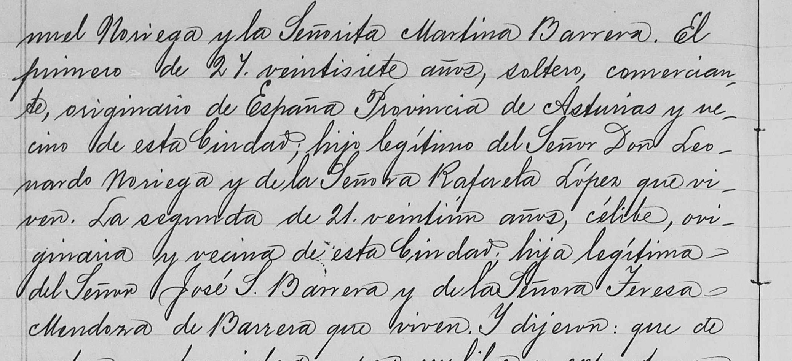
  <figcaption>Catorce, San Luis Potosí, civil register, acta 96, 6 July 1893: "…<strong>Manuel Noriega</strong> y la Señorita <strong>Martina Barrera</strong>. El primero de 27 veintisiete años, soltero, <strong>comerciante, originario de España Provincia de Asturias</strong> y vecino de esta Ciudad; <strong>hijo legítimo del Señor Don Leonardo Noriega y de la Señora Rafaela López, que viven</strong>. La segunda de 21 veintiún años, célibe, originaria y vecina de esta Ciudad; <strong>hija legítima del Señor José S. Barrera y de la Señora Teresa Mendoza de Barrera, que viven</strong>." <a href="documents/noriega-barrera-marriage-1893-catorce-page2.jpg">Full page here.</a></figcaption>
</figure>

<p>Read that again. <strong>"Originario de España, Provincia de Asturias."</strong> My great-great-grandfather was not Mexican. He was an Asturian, twenty-seven years old, a <em>comerciante</em> — a merchant — living in a mining town on the other side of the Atlantic from where he was born.</p>

<p>And he was not alone there. The two men who stood up for him are <strong>José Joglar, 44, merchant, of Asturias</strong>, and <strong>Benito Macho, 33, merchant, of Santander</strong>. The bride's witnesses are local: <strong>Luis García Peña, 72, married, a miner</strong>, and a 22-year-old clerk. You can see the whole social world in that one paragraph — the northern-Spanish shopkeepers who followed the silver, and the old miner from down the road.</p>

<p>So there are <strong>two men in this family who crossed the ocean</strong>, and they are 266 years and the whole width of Spain apart. Bartolomé González came from <strong>Morón de la Frontera</strong>, in Andalusia, and was buried in Monterrey in 1672 as a charity case. Manuel Noriega came from <strong>Asturias</strong>, on the green north coast, and was selling goods in Real de Catorce in 1893. Both of them ended up, eventually, in the same great-grandson.</p>

<p>That record hands me two more couples I had never heard of a day ago: <strong>Leonardo Noriega and Rafaela López</strong>, alive in Spain in 1893, and <strong>José S. Barrera and Teresa Mendoza</strong>. The Noriegas take their name from a village called Noriega, in the council of Ribadedeva, right on the Asturian border with Cantabria — but I'll say plainly that I have not yet proved the connection to that village, only the province, and the province is what the record says. Asturian parish records aren't in the indexes I can search; they sit in the diocesan archive at Oviedo. That's the next door.</p>

<h2>Three brothers, one war</h2>
<p>Then the American part of the story starts, and it starts with World War II. Three of the brothers served.</p>

<p><strong>Jose Homero Quintanilla</strong> <span class="badge proven">Proven</span> was drafted in August 1942 out of San Antonio, where he'd been a bank teller studying pre-med at St. Mary's. He wasn't even a citizen yet; he naturalized when he was drafted. The Army made him a medic. His serial number was 38143995, and AI searching that number through the National Archives' digitized morning reports turned up his entire war, day by day: medical training at Camp Barkeley, Texas. A sergeant by November 1943, stationed with the 32nd General Hospital at Fairford Park in England, the Indiana University medical school's hospital unit and the first Allied general hospital into France after D-Day. Normandy by August 1944, in a tent hospital near La Haye-du-Puits. Then into Belgium in the winter of 1944.</p>

<p>In December 1944, during the Battle of the Bulge, he was farmed out on temporary duty to the 134th Medical Group, whose headquarters sat in Verviers, Belgium, in what the GIs called buzz-bomb alley. The Germans were firing V-1 flying bombs, early cruise missiles, at the Liège supply hub around the clock, and Verviers was under the flight path. In January 1945 one of them got him. His federal hospital admission card, indexed by his serial number, says it in the Army's own clipped language:</p>

<blockquote>
<p>Admission: Jan 1945. Battle casualty.</p>
<p>Diagnosis: Wound(s), lacerated with no nerve or artery involvement. Location: Face, generally. Location: Hand, generally. Causative agent: ROBOT BOMB (Buzz, V-1, V-2 bomb), blast effects.</p>
<p>Discharge: Jan 1945, from General Hospital, to DUTY.</p>
</blockquote>

<p>Face and hands, flying glass from a robot bomb, exactly the story the family told. He was patched up and back on duty the same month. He came home with a Purple Heart and four campaign stars, went to George Washington University, and spent his career as a U.S. Foreign Service officer in twelve countries. He died in 2016, age 94, married 72 years.</p>

<p>And then, at last, a public source. The War Department's casualty lists reached hometown papers a few weeks behind the event, and on Monday, 5 March 1945, the <em>San Antonio Light</em> ran that day's list on page 5 under the headline "15 South Texans Killed In Action; 23 Wounded." Among the wounded, European area: "Sgt. Jose H. Quintanilla; wife, Mrs. Gloria Quintanilla, San Antonio." That's the fifth independent source for the wound, and the only one that was public at the time. It also puts his wife on the record: Gloria, in San Antonio, reading casualty lists. If the obituary's 72 years is this marriage, they had wed in 1944, and she was a bride of months.</p>

<figure>
  
  <figcaption>The <em>San Antonio Light</em>, Monday 5 March 1945, page 5. "The war department Monday announced the names of 2554 soldiers wounded in action, including the following from South Texas... In the European area:" and, down the alphabet, "Sgt. Jose H. Quintanilla; wife, Mrs. Gloria Quintanilla, San Antonio." <a href="documents/jose-casualty-list-1945-page.jpg">Full page here.</a></figcaption>
</figure>

<p><strong>Hector Quintanilla Jr.</strong> <span class="badge proven">Proven</span> was drafted in January 1943, trained as a radio and radar technician, and shipped out to the 72nd Bomb Squadron, 13th Air Force, in the South Pacific. He stayed in the Air Force after the war, and from August 1963 until the day it closed in January 1970 he ran <strong>Project Blue Book</strong>, the United States Air Force's official UFO investigation. That is not family exaggeration. He has a Wikipedia entry and a CIA byline.</p>

<h2>The card that says "Robot Bomb"</h2>
<p>Of everything on this page, this is the one I most wanted and least expected to get. The family always said Jose was wounded by a buzz bomb in Belgium in January 1945 — face and hand — patched up and sent back. It was the sort of thing families say. There was a San Antonio newspaper casualty list to back it, and nothing else.</p>

<p>The US Army kept a punch-card record of every hospital admission of the war. His is there, under his serial number, <strong>38143995</strong>.</p>

<blockquote>
<p><strong>Quintanilla, Jose H</strong> — admission age <strong>24</strong> — Medical Dept. — length of service 2–3 yr.<br>
<strong>Admission date: Jan 1945.</strong><br>
<strong>Type of injury: "Battle casualty."</strong><br>
<strong>Diagnosis: "Wound(s), lacerated with no nerve or artery involvement; Location: Face, generally; Location: Hand, generally; CausativeAgent: <em>Robot Bomb (Buzz, V-1, V-2 bomb) Blast effects</em>."</strong><br>
<strong>Discharge: Jan 1945 — to Duty.</strong></p>
</blockquote>

<p>Face. Hand. Robot bomb, blast effects. Battle casualty. Back on duty inside the month.</p>

<p><strong>Every part of the family story is in that card</strong>, in the Army's own coding, written down at the time by a clerk who had never heard of him. Eighty years later it reads back exactly as his brothers remembered it.</p>

<p>Two things it does <em>not</em> do, and I'll say them because the temptation to overclaim here is strong. <strong>It gives the month, not the day</strong> — so the exact date of his Purple Heart is still open, and still needs his personnel file from St. Louis or the January morning reports. And <strong>it gives no place at all</strong>: no country, no town. It does not say Antwerp. It does not say Verviers. Where he was standing when it happened still rests on where his unit was, which is inference, not record.</p>

<p>One footnote for anyone who pulls this card themselves: the "medical treatment" field expands to a nonsense string about a urethral suture. These records were punched from numeric codes and the expansions misfire; the diagnosis is face and hand, and that is what to read.</p>

<h2>The man who went first, and the story he told</h2>
<p>Everything American in this family runs through one man, and until this week I had him wrong. I had written that my great-grandfather <strong>Hector Sr.</strong> was born in Hidalgo, Texas, around 1890, and that his American citizenship was the hinge the whole family swung on. Neither half of that is right.</p>

<p>His full name was <strong>Héctor Hermenegildo Quintanilla Villanueva</strong> — the H that turns up on the border card and in the newspapers is Hermenegildo. And his own marriage record says where he was from. Monterrey, 6 December 1917, eight o'clock at night, at a house on Calle de Reforma, in front of a civil judge named Jacobo Treviño:</p>

<figure>
  
  <figcaption>Acta 507, Monterrey: "…el primero de <strong>veinticuatro años de edad, telegrafista, originario de Matamoros, Tamaulipas</strong>, hijo legítimo de los señores Inocencio Quintanilla y Lázara Villanueva…" Twenty-four years old in December 1917, so born about 1893. A <strong>telegraph operator</strong>. And a native of <strong>Matamoros, Mexico</strong> — not Texas. The bride, María Teresa Noriega, was <strong>sixteen</strong>, and from Matehuala in San Luis Potosí. <a href="documents/hector-sr-marriage-1917-page.jpg">Full page here.</a></figcaption>
</figure>

<p>Three other things agree with it. His four sons all had to <strong>naturalise as adults, one at a time</strong> — I have the petition numbers for three of them and Jose's declaration of intention for the fourth. If their father had been a US citizen, they would have been citizens from birth and none of that paperwork would exist. Hector Jr. puts it in his own words in his memoir: "in order to be an officer in the Army Air Corps you had to be an American Citizen. <em>I was an immigrant.</em>" And Jose's 1929 border card is an <em>alien</em> admission card, with an alien registration number on it, stating its purpose in one line: <strong>"Going to join: Father, H. H. Quintanilla, S.A. Tex."</strong> He had gone ahead. They were following him.</p>

<p>So where did Texas come from? He said it himself. On the <strong>1930 census</strong> in San Antonio he told the enumerator that he was born in Texas, and that <em>both his parents</em> were born in Texas — while recording his wife and all four sons as born in Mexico. He said it again in 1940.</p>

<p>That census was taken in April 1930, at the start of what's now called the <strong>Mexican Repatriation</strong>, when hundreds of thousands of people were pushed out of the United States from exactly these neighbourhoods, US citizens among them. I can't tell you what was in his head. I can tell you that a newly arrived father of four Mexican-born boys, sitting in a rented house on the West Side in 1930, told the government he was a Texan. The family believed it for ninety-six years. I believed it until this week.</p>

<p>He was still alive in July 1975 to bury his eldest son, and he died in Bexar County on <strong>25 September 1985</strong>, about ninety-two years old. He lived long enough to see one son run the Air Force's UFO project, one become an American diplomat, and one sit on the committee that ran the Democratic Party of Texas. I have no photograph of him.</p>

<h2>The weakest rung was the newest one</h2>
<p>After all the colonial work, I scored every link in the line and got a result I didn't expect. The shakiest join wasn't in the 1600s. It was <strong>Inocencio to Dámaso</strong> — and it rested on a single document, his 1924 death record. Everything two hundred years older was better evidenced than that. So I went and found more.</p>

<figure>
  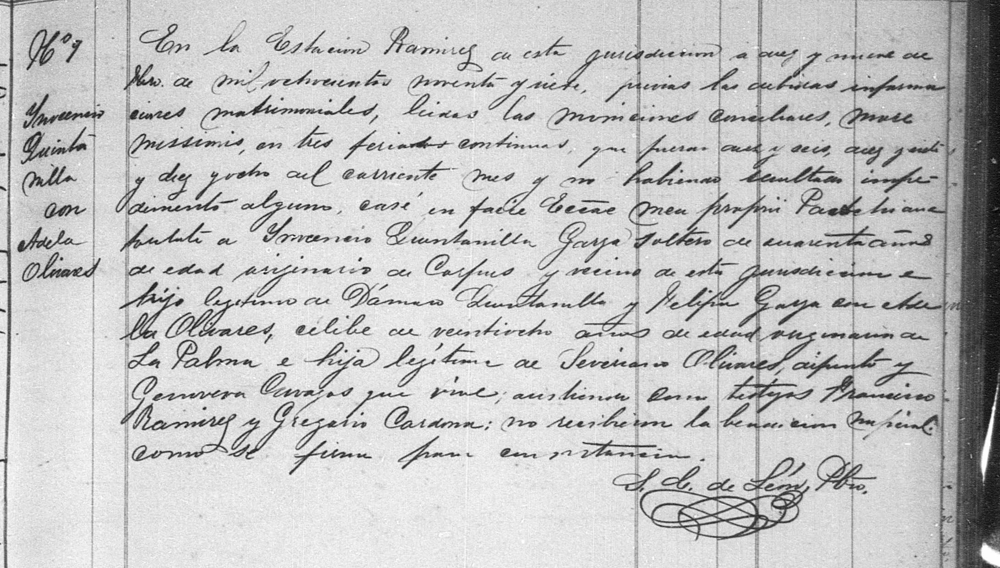
  <figcaption>Nuestra Señora del Refugio, Matamoros — marriage register, entry Nº 9, at <strong>Estación Ramírez, 19 February 1897</strong>: "…casé in facie Ecclesiae… a <strong>Ynocencio Quintanilla Garza, soltero, de cuarenta años de edad</strong>… <strong>e hijo legítimo de Dámaso Quintanilla y Felipa Garza</strong>, con <strong>Adela Olivares, célibe de veintiocho años de edad… hija legítima de Severiano Olivares, difunto, y Genoveva Carvajos, que vive</strong>; asistieron como testigos Francisco Ramírez y Gregorio Cardona." Signed S. L. de León, presbítero. <a href="documents/inocencio-marriage-1897-page.jpg">Full page here.</a></figcaption>
</figure>

<p>There it is in the priest's hand: <strong>son of Dámaso Quintanilla and Felipa Garza.</strong> Forty years old in February 1897, so born about 1857.</p>

<p>I'd been wary of this record, and I should say why. An earlier version of this page claimed the 1897 marriage was what linked Inocencio to Dámaso — and I corrected that, because the bride here is <strong>Adela Olivares</strong>, not Lázara Villanueva, who was my great-grandfather Hector's mother. That correction stands: this wedding is <em>not</em> Hector's parents' wedding, and it does not prove Hector's descent. But it does something else, which I'd missed. It states Inocencio's <em>own</em> parents, plainly. Two different questions, and I'd let the answer to one bury the answer to the other.</p>

<p>And his baptism turned up too — <strong>José Ynocente Quintanilla Garza, baptised at Matamoros on 24 April 1853</strong>, entry 223, "hijo legítimo de … Quintanilla y de Doña María Felipa Garza." That film is a poor scan and the father's forename sits under an ink blot, so I'll be honest that I can read the mother's name and the surname but not the given name by eye. Taken with the other two it's corroboration, not proof on its own.</p>

<p>So that rung now rests on three records instead of one: <strong>his baptism in 1853, his marriage in 1897, and his death in 1924</strong> — and the middle one is fully legible. It has stopped being the weak point.</p>

<h2>A crack in the chain, and the record that closed it</h2>
<p>Chasing him also turned up a problem with my own paper trail, so here it is. This page has said that Inocencio's 1897 marriage in Matamoros is what links him up to Dámaso. When I actually read that record, the groom is "<strong>Inocencio Quintanilla Garza, soltero</strong>" — a bachelor — marrying a woman called <strong>Adela Olivares</strong> in February 1897. But Hector Sr. was born around 1893, to Inocencio and <strong>Lázara Villanueva</strong>. Wrong wife, wrong order.</p>

<p>The answer was already sitting in my own files, in a record I'd saved and never read closely: Inocencio's death, at Reynosa, on 14 January 1924, reported in person by another son.</p>

<figure>
  
  <figcaption>Reynosa, 14 January 1924. <strong>Rafael M. Quintanilla</strong>, forty, a merchant — a great-uncle I didn't know existed — reports the death of "su padre <strong>Don Inocencio Quintanilla, mexicano, profesionista, viudo de segundas nupcias</strong>, originario de Matamoros Tamaulipas, a consecuencia de <strong>Bronco Neumonía</strong>," and adds that his father "fue hijo del Sr. <strong>Dámaso Quintanilla</strong> y de la Sra. <strong>Felipa Garza</strong>, ambos finados." <em>Widower of a second marriage</em> — which is exactly what two different wives requires. And a son naming his own grandparents.</figcaption>
</figure>

<p>So the link to Dámaso doesn't rest on that 1897 marriage after all. It rests on a death certificate given by Inocencio's son, which is better evidence anyway. The chain holds, it's just held by a different nail than I thought. That's the third time on this page a document I already owned turned out to say more than I'd taken from it.</p>

<h2>The uncle who wrote it down</h2>
<p>And here is the thing I did not expect. In 1975 Hector Jr. sat down and wrote a book about it, <em>UFOs: An Air Force Dilemma</em>. No publisher took it. It sat unpublished for twenty years until a research foundation put the manuscript online in the 1990s, unedited, exactly as he typed it. So there are a hundred and twenty-seven pages in this family's own voice, and the first chapter isn't about flying saucers at all. He called it "My humble beginning as an immigrant Mexican, raised in the ghetto."</p>

<p>He starts by explaining why he's telling it: "I think there might be a message for some Mexican kid who is about ready to drop out of school or our society. The easiest thing in the world to do is drop-out. The most difficult thing to do is to drop-in and challenge the system lawfully." Then he goes back to the bridge, the same crossing on the same day in 1929 that the border manifest in my files records in a clerk's handwriting:</p>

<blockquote>
<p>"I remember walking across the old bridge at Laredo, Texas, and I wanted to urinate very badly. Mama wouldn't let me urinate in the old Rio Grande River, so I had to wait until we reached the immigration office. I remember my parents being afraid of the customs officers… My first impression of Laredo, Texas, was one of disappointment. Someone along the way had lied to me. The streets in the United States were not paved with gold. In fact, many of the streets were not paved at all."</p>
</blockquote>

<p>He was six. The family rented a house near Martin and Laredo streets in San Antonio, with a cast iron stove and a dirt floor, "but it didn't bother us kids too much because we only wore shoes on Sunday." At school he was caught between everybody: he spoke Castilian Spanish and no English, while the other Mexican children spoke Tex-Mex. "The Mexicans didn't like us because we were fair skinned, talked funny, and considered uppity. The Anglos didn't like us because we were Mexicans; consequently I remember fighting practically every day of my life, but my brothers and I survived. We stuck together and always came to each others aid. In fact, we're still that close."</p>

<p>He was selling newspapers at seven, with a corner outside the Baptist Memorial Hospital he had to fight to keep. When the Depression made two cents too much to ask for a paper, he added a shoe-shine box. A hospital auditor named Franklin D. Jones took an interest, visited their $1.25-a-week shack, arranged to have the boy's tonsils out, bought him his first suit when he finished junior high, and taught him to keep books on his paper accounts. Hector called him his guardian angel and never told him so. His mother woke him at half past four for the morning route: <em>"Hijo, es tiempo que te vallas."</em> Son, it's time for you to go.</p>

<p>In high school he switched to the afternoon route, which meant delivering the <em>San Antonio Light</em> — the same paper that would print his brother Jose's name on a casualty list in 1945, and his own name over a medal in 1970. He gave the route up in his first month at St. Mary's, because a physics lab twice a week was making him late. He was sorting mail on the night shift at the Post Office in January 1943 when another sorter tapped him on the shoulder and handed him an envelope: "I think this belongs to you." It was his own draft notice.</p>

<p>He wanted to be a navigator. He was good at math and he knew he could do it. But you had to be a citizen to be an officer, and he wasn't one, and he was too young to apply. So he went as enlisted aircrew instead, and spent the war chasing his citizenship across the Pacific. In the Philippines his commander gave him a seat on a plane to Manila so he could finally take the oath at the American Embassy. The woman at the desk shook her head slowly and told him the Ambassador couldn't do it. He went and got drunk for the first time in his life, in a bar across from the Manila Stadium, on cheap green whiskey. He remembered the brand for the rest of his life. It was called <strong>Purple Heart</strong>. "I think I deserve one for drinking it," he wrote — thirty years after his own brother came home with a real one.</p>

<p>He took the oath at last on 25 October 1946, in the Federal Building in San Antonio. "It meant a lot to me then and it still does." Physics degree from St. Mary's in 1950. A commission in 1951, which he'd been dreaming about since he was a shoe-shine boy watching young officers walk past in their pinks and greens. Nine years in Air Force intelligence, Germany and Japan. Then in 1963 a posting to Wright-Patterson, where a six-foot-three West Point colonel named Eric de Jonckheere told him he was the new UFO officer. Hector said he wasn't ready. The colonel looked him in the eye and said, "You take this job and do it well or I'll bust your ass."</p>

<p>He ran it for six and a half years, through the Michigan swamp-gas circus and the Socorro landing case he never managed to solve, taking the abuse of a public that mostly thought he was lying. Of the whole thing he wrote one sentence I keep coming back to: <em>"I'm really very grateful for the opportunity which was handed to me, because only in America could an immigrant Mexican rise to head such an important and controversial project."</em></p>

<figure>
  
  <figcaption>The <em>San Antonio Light</em>, 2 July 1970, "Military News." "The Meritorious Service Medal was awarded to Lt. Col. Hector Quintanilla Jr., son of Mr. and Mrs. Hector Quintanilla Sr., 103 Marshall… for his performance as chief of the Aerial Phenomena (UFO) Office… He attended Brackenridge high school and is a 1950 graduate of St. Mary's University." Six months after Blue Book closed, the Air Force decorated him for running it — and the paper he'd delivered as a boy ran the notice, with his parents' address on Marshall Street still attached to his name. <a href="documents/hector-jr-medal-1970-page.jpg">Full page here.</a></figcaption>
</figure>

<p>He dedicated the book to his six children: "TO GENE, TESSIE, KARL, NANCY, DIANE, AND BOB. YOU ARE MY CONTRIBUTION FOR TOMORROW'S BETTER WORLD." He died in San Antonio in 1998, aged 75.</p>

<p>One correction the manuscript forces on us, and I'd rather print it than hide it. The family has always said Hector Jr. was a bombardier. He can't have been. Bombardiers were commissioned officers, and he says plainly in his own book that he couldn't be an officer because he wasn't yet a citizen; the Army sent him to radio school in Wisconsin and radar school in Florida. He flew in bombers, in the 72nd Bomb Squadron, but as enlisted radar aircrew. The story got promoted somewhere along the way.</p>

<h2>The brother who stayed</h2>
<p>Humberto was the eldest, and the only one of the four who didn't go to war. For most of this project he was one line in my notes: "Bexar County Democratic chairman, non-veteran." There is nothing about him on the open internet at all. But there are four hundred newspaper hits, and the first one I opened was his obituary, and it turned out to be the densest document in the whole family.</p>

<p>He was born in Monterrey on 19 December 1918, which made him <strong>ten years old</strong> on the bridge at Laredo in November 1929 — old enough to actually remember Mexico, where Hector Jr. was six and remembered mainly needing the toilet. He died on 30 July 1975 at fifty-six, the first of the four to go, eighteen years before the next. He sold cars for Smith Motor Sales.</p>

<p>And then the obituary lists what he did with the rest of his time. <strong>LULAC Council No. 2</strong>, San Antonio's council in the oldest Latino civil rights organization in the country. <strong>Trustee of Texas Lutheran College for fifteen years</strong> — a Lutheran college, this from a man who was a lector at Our Lady of Sorrows. The San Antonio Diabetes Association, a health action council, an advisory committee on mental health and retardation. Precinct committeeman for Precinct 308 and a member of the <strong>Bexar County Executive Committee</strong>. <strong>Two terms on the State Democratic Executive Committee</strong> for the 19th Senatorial District — that's the governing body of the Texas Democratic Party, two members per senate district. Alternate to a Democratic National Convention, delegate to four state conventions.</p>

<figure>
  
  <figcaption>The <em>Corpus Christi Times</em>, 18 February 1973, carried statewide. Texas Democratic Party chairman Calvin Guest naming twelve committees "to work for party unification," warning them against "internal squabbles based on ideological differences" — Texas Democrats were still in pieces after Sharpstown. Down in the rosters: "Humberto Quintanilla, San Antonio," in the same lists as <strong>Eddie Bernice Johnson of Dallas</strong>, who would go on to thirty years in Congress. <a href="documents/humberto-sdec-1973-page.jpg">Full page here.</a></figcaption>
</figure>

<p>So: a car salesman from the West Side who came over at ten with no English, sitting on the committee that ran the Democratic Party of Texas. He did it in exactly the decade when Mexican-American political power in San Antonio was being built, and he did it unpaid, on top of a sales job and four children.</p>

<p>Two more things fell out of that obituary. His parents are listed among the survivors — "Mr. and Mrs. Hector H. Quintanilla" — which means <strong>my great-grandfather was still alive in July 1975 and buried his eldest son</strong>. That's the firmest date I have on Hector Sr., who is otherwise the least documented man in the recent part of this tree. And Humberto was buried in <strong>San Fernando Cemetery No. 2</strong>, which is where Leo and Simona Martinez are. Both halves of my mother's family are in the same ground.</p>

<figure>
  
  <figcaption>The <em>San Antonio News</em>, 31 July 1975. "Humberto L. Quintanilla, age 56 years… born in Monterrey, Mexico, on December 19, 1918… Brothers: Jose Homero, Hector M. and Manuel M. Quintanilla." All four brothers named in one place, the parents still living, and a list of offices that took a while to unpack. <a href="documents/humberto-obituary-1975-page.jpg">Full page here.</a></figcaption>
</figure>

<p>One correction, and it is the third of its kind. The family says Humberto was <em>chairman</em> of the Bexar County Democrats. He wasn't — he chaired his precinct and sat on the county committee. But he did sit on the state committee for two terms, which is arguably the bigger job, so nobody needed to embellish. That's now three inflated titles among these brothers: Hector Jr. was a lieutenant colonel and not a colonel, he was enlisted aircrew and not a bombardier, and Humberto was a committeeman and not a chairman. The truth was good enough every time.</p>

<h2>Mr. Q</h2>
<p>My grandfather was the youngest of the four, and until this week he was the thinnest man on this page — one naturalisation petition and nothing else. That was my fault, not the record's. He got a proper newspaper send-off with his photograph on it, and it had been sitting there since 1992.</p>

<figure>
  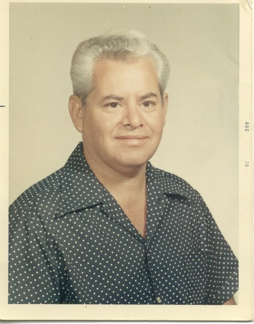
  <figcaption>Manuel Quintanilla, studio portrait, date-stamped <strong>AUG 70</strong> in the border. He is forty-five. This is the first photograph of him I've found, and the first photograph of anyone in this line older than my mother.</figcaption>
</figure>

<p>He was born in Monterrey on <strong>28 May 1925</strong> and came over at four. He didn't finish high school — he went to Mark Twain Middle, Central Catholic and Jefferson and left with a <strong>GED</strong>. Then he did the thing that tells you who he was: he <strong>walked into a Texas State Optical shop and offered to work for nothing if they would teach him the trade</strong>. He stayed with TSO thirty-five years, took over the franchise at 1710 Fredericksburg Road in 1980, went independent in 1989, and put his own name over the door — <strong>Quintanilla Optical</strong>.</p>

<p>In the late 1950s he joined the <strong>Bexar County Sheriff's Reserves</strong>, unpaid, and by the end he was <strong>commanding them</strong>. He fitted glasses for half the county's deputies and firefighters, which is how he came to be called <strong>"Mr. Q."</strong> The Commissioners Court gave him the Hidalgo Award for public service in 1991 and again in 1992, and in March 1992 the national reserve officers' association honoured him for thirty-five years as a reserve deputy. He died that October, aged 67, after a short illness.</p>

<figure>
  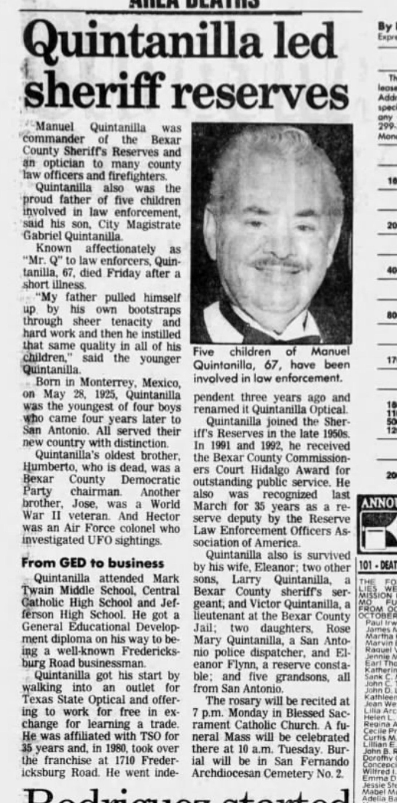
  <figcaption>The <em>San Antonio Express-News</em>, Sunday 25 October 1992. "Manuel Quintanilla was commander of the Bexar County Sheriff's Reserves and an optician to many county law officers and firefighters… Known affectionately as 'Mr. Q' to law enforcers." His son, City Magistrate Gabriel Quintanilla: <em>"My father pulled himself up by his own bootstraps through sheer tenacity and hard work and then he instilled that same quality in all of his children."</em> <a href="documents/manuel-obituary-1992-page.jpg">Full page here.</a></figcaption>
</figure>

<p>Five of his children went into law enforcement. The obituary names them: Gabriel a city magistrate, Larry a sheriff's sergeant, Victor a lieutenant at the county jail, Rose Mary a police dispatcher — and <strong>Eleanor Flynn, a reserve constable</strong>. That last one is my mother, and I did not know it was in print.</p>

<figure>
  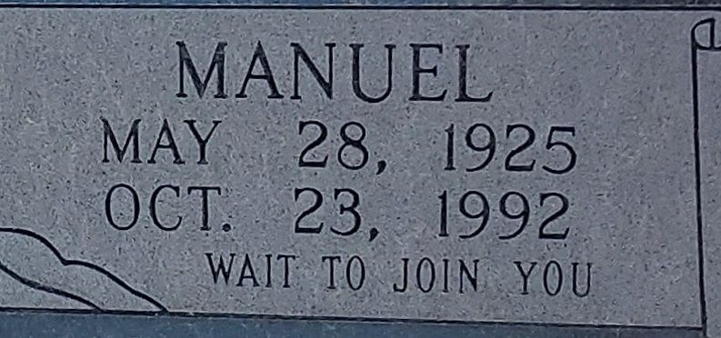
  <figcaption>San Fernando Cemetery No. 2 — the same ground as his brother Humberto and his wife's parents, Leo and Simona Martinez. <strong>"WAIT TO JOIN YOU."</strong> Eleanor joined him in 2018, twenty-six years later.</figcaption>
</figure>

<h2>Where the family's mistakes came from</h2>
<p>And then, four paragraphs into that obituary, a sentence that explains something I'd been puzzling over all week:</p>

<blockquote><p>"Quintanilla's oldest brother, <strong>Humberto</strong>, who is dead, was a <strong>Bexar County Democratic Party chairman</strong>. Another brother, Jose, was a World War II veteran. And <strong>Hector was an Air Force colonel</strong> who investigated UFO sightings."</p></blockquote>

<p>There they are. Both of the errors I corrected earlier on this page — Humberto as county <em>chairman</em>, Hector as a <em>colonel</em> — come from that one sentence, written by a reporter in October 1992 from what a grieving family told him at the door. Humberto's own 1975 obituary says precinct committeeman and county <em>committee member</em>. Hector's own manuscript and his 1970 medal notice both say <em>lieutenant</em> colonel.</p>

<p>Nobody lied. A reporter wrote it down slightly too generously on a bad week, it got clipped and kept, and thirty-four years later it was simply what the family knew. That is how family history actually goes wrong, and I'd rather show the exact sentence than pretend I found the errors by being clever.</p>

<p><strong>Manuel Quintanilla</strong>, my grandfather, served in the Army in Alaska after the war; that record is still the next one to pull.</p>

<h2>The paper trail</h2>
<ul class="docs">
  <li><a href="https://aad.archives.gov/aad/record-detail.jsp?dt=893&amp;rid=7148086">Jose's enlistment record, National Archives</a><span class="doc-what">Drafted 14 Aug 1942, Ft. Sam Houston. Born Mexico 1921, bank clerk, one year of college, "not yet a citizen."</span></li>
  <li><a href="https://catalog.archives.gov/id/457117177?q=38143995">Morning reports, 32nd General Hospital, England 1943</a><span class="doc-what">Sergeant Quintanilla in the flesh, sick call and furloughs at Fairford Park. Free at the National Archives, searchable by his serial number.</span></li>
  <li><a href="https://catalog.archives.gov/id/567397813?q=38143995">Morning report, Normandy, August 1944</a><span class="doc-what">The detachment two miles west of Bolleville, France. His Normandy campaign star, on paper.</span></li>
  <li><a href="https://catalog.archives.gov/id/578711433?q=38143995">Special orders, December 1944, Belgium</a><span class="doc-what">"Sgt Jose Quintanilla, 38143995" detached to the 493rd Medical Collecting Company, then the 134th Medical Group at Verviers. This puts him under the buzz bombs.</span></li>
  <li><a href="https://www.fold3.com/record/701016629">WWII hospital admission card (Fold3, login needed)</a><span class="doc-what">The V-1 wound card quoted above. Fourth independent source for the family story.</span></li>
  <li><a href="https://achh.army.mil/history/book-wwii-134thmedgp-134medgp1945/">134th Medical Group official 1945 report</a><span class="doc-what">HQ Verviers, "V-bombs and aerial bombardment... minor [casualties] from flying glass." His unit, his month, his wound.</span></li>
  <li><a href="documents/jose-casualty-list-1945-page.jpg">San Antonio Light, 5 March 1945, page 5</a><span class="doc-what">The War Department wounded list, European area: "Sgt. Jose H. Quintanilla; wife, Mrs. Gloria Quintanilla, San Antonio." Fifth source, and the only public one. Newspapers.com image 1259353335.</span></li>
  <li><a href="https://medicine.iu.edu/magazine/answering-the-call">The 32nd General Hospital's story, Indiana University</a><span class="doc-what">His parent unit from England to Aachen. IU's archive has the unit's scrapbooks and photos; he may be in them.</span></li>
  <li><a href="https://ufologie.patrickgross.org/doc/quintanilla.pdf">Hector Quintanilla Jr., <em>UFOs: An Air Force Dilemma</em> (1975, unpublished)</a><span class="doc-what">127 pages in his own unedited words. Chapter one is the family's immigration, the dirt floor, the paper route, the draft notice, the citizenship chase. Published online by the National Institute for Discovery Science; copy saved in documents/.</span></li>
  <li><a href="https://www.cia.gov/resources/csi/static/Investigation-of-UFOs.pdf">"The Investigation of UFO's," <em>Studies in Intelligence</em>, Fall 1966</a><span class="doc-what">My great-uncle, writing in the CIA's own in-house journal. Declassified 1993.</span></li>
  <li><a href="documents/hector-jr-medal-1970-page.jpg">San Antonio Light, 2 July 1970, page 22</a><span class="doc-what">Meritorious Service Medal for running Blue Book; confirms Brackenridge High, St. Mary's 1950, and his parents at 103 Marshall. Newspapers.com image 1261905195.</span></li>
  <li><a href="documents/humberto-obituary-1975-page.jpg">San Antonio News, 31 July 1975, page 39</a><span class="doc-what">Humberto's obituary: birth 19 Dec 1918 Monterrey, death 30 Jul 1975, wife Irene, four children, all three brothers, parents still living, and every office he held. Newspapers.com image 1267827302.</span></li>
  <li><a href="documents/humberto-sdec-1973-page.jpg">Corpus Christi Times, 18 February 1973, page 25</a><span class="doc-what">"Texas Demo panels named to work for party unification" — Humberto on the State Democratic Executive Committee's subcommittees, with Eddie Bernice Johnson. Newspapers.com image 759266863.</span></li>
  <li><a href="documents/manuel-obituary-1992-page.jpg">San Antonio Express-News, 25 October 1992, page 28</a><span class="doc-what">"Quintanilla led sheriff reserves" — Manuel's obituary with photograph: commander of the Sheriff's Reserves, the TSO story, the Hidalgo Awards, and five children in law enforcement. Also the origin of the family's "colonel" and "chairman" errors. Newspapers.com image 1279299342.</span></li>
  <li><a href="https://www.findagrave.com/memorial/61284100/manuel-quintanilla">Manuel Quintanilla, San Fernando Cemetery #2</a><span class="doc-what">Memorial 61284100: headstone (28 May 1925 – 23 Oct 1992, "Wait to join you"), the 1970 portrait, and links to his parents and all three brothers.</span></li>
  <li><a href="http://clioregio.blogspot.com/2009/08/carta-de-fundacion-de-la-ciudad-de.html">The 1596 founding charter of Monterrey</a><span class="doc-what">Lucas García among the twelve founders, in the founding document itself.</span></li>
  <li><a href="https://groups.google.com/g/genealogia-mexico/c/aQ8YBR9tG1Q">The founder's ten children, from Cavazos Garza</a><span class="doc-what">Ana, both name forms, married to Bartolomé González. The link that makes us founder stock.</span></li>
  <li><a href="documents/quintanilla-hector-marriage-1917.jpg">Hector Quintanilla's marriage register, Monterrey, 1917</a><span class="doc-what">My great-grandfather's civil marriage; names his father Inocencio Quintanilla and his wife Teresa Noriega. The most recent weld, image pulled.</span></li>
  <li><a href="documents/quintanilla-inocencio-marriage-1897.jpg">Inocencio Quintanilla's marriage register, Matamoros, 1897</a><span class="doc-what">Names his father Dámaso Quintanilla, in the Nuestra Señora del Refugio parish book. The middle weld, image pulled.</span></li>
  <li><a href="documents/hector-sr-marriage-1917-page.jpg">Hector Sr.'s marriage record, Monterrey, 6 Dec 1917 (Acta 507)</a><span class="doc-what">"Veinticuatro años de edad, telegrafista, originario de Matamoros, Tamaulipas." His age, his trade, his birthplace and his parents, in his own marriage entry. This is what corrects the Texas story.</span></li>
  <li><a href="documents/inocencio-death-1924-entry.jpg">Inocencio Quintanilla's death, Reynosa, 14 Jan 1924</a><span class="doc-what">Reported by his son Rafael M. Quintanilla; "viudo de segundas nupcias," son of Dámaso Quintanilla and Felipa Garza. This, not the 1897 marriage, is what welds Inocencio to Dámaso.</span></li>
  <li><a href="documents/quintanilla-damaso-christening-full.jpg">Dámaso Quintanilla's baptism, China, Nuevo León, 1813</a><span class="doc-what">Names his parents José Antonio Encarnación Quintanilla and María Úrsula Longoria, plus all four grandparents. The weld to the colonial line, read on the page.</span></li>
  <li><a href="https://ancestors.familysearch.org/en/LZF3-NW4/x">Francisco Miguel Quintanilla Treviño, 1731</a><span class="doc-what">FamilySearch, 47 attached register entries: christened Monterrey 1731, married Susana Cantú at Montemorelos 1766, father of José Antonio. This is the compiled tree's identification of the Miguel at my proven floor with the Francisco Miguel of 1731 — the join I have not yet read on a page.</span></li>
  <li><a href="https://ancestors.familysearch.org/en/LRBT-2FQ/x">Antonio González de Quintanilla, 1684–1761</a><span class="doc-what">Born Monterrey, died and buried at Cadereyta; married Nicolasa Treviño Leal 1729. His father is Alférez Real Bartolomé (<a href="https://ancestors.familysearch.org/en/LJGL-7TL/x">LJGL-7TL</a>), married 1672, whose mother is Ana María García de Quintanilla (<a href="https://ancestors.familysearch.org/en/LDK5-9RC/x">LDK5-9RC</a>), 1620–1684, the founder's daughter.</span></li>
  <li><a href="https://www.tgsaustin.org/htms/Juan%20Bautista%20Chapa/Descendants/index.htm">Descendants of Juan Bautista Chapa, TGSA</a><span class="doc-what">The published Longoria descendancy: Chapa → Nicolás → Clara María Chapa × Juan Diego Longoria → José Matías → José Marcelino × Francisca Serna → María Úrsula × José Antonio Quintanilla. Dámaso's mother's line, to Italy.</span></li>
  <li><a href="https://www.tshaonline.org/handbook/entries/chapa-juan-bautista">Juan Bautista Chapa, Handbook of Texas</a><span class="doc-what">Who he was: the anonymous historian of Nuevo León, born Schiapapria at Albisola, Italy, 1627; unmasked by Cavazos Garza in 1961.</span></li>
  <li><a href="https://en.wikipedia.org/wiki/Diego_de_Montemayor">Diego de Montemayor, founder of Monterrey</a><span class="doc-what">Born Málaga ~1528, sailed 1548, founded the city 1596, killed his wife 1581. Lucas García's grandfather through María Inés Rodríguez. Alcalde list on the companion Wikipedia page puts Lucas García and Diego Rodríguez in office eight times, Bartolomé González in 1648.</span></li>
  <li><a href="https://www.wearecousins.info/2024/09/diego-de-montemayors-1548-passage-to-new-spain/">Montemayor's 1548 passenger-list entry</a><span class="doc-what">Catálogo de Pasajeros a Indias, vol. III p. 109, 17 December 1548, Seville. The oldest document in this tree.</span></li>
  <li><a href="https://es.wikipedia.org/wiki/Marcos_Alonso_de_la_Garza_y_del_Arc%C3%B3n">Marcos Alonso de la Garza y del Arcón</a><span class="doc-what">Of Lepe, Huelva, ~1551–1634; came to Monterrey 1596; father of Blas de la Garza Falcón and Alonso de Treviño, both my ancestors; married Juana de Treviño y Quintanilla, sister of Juliana Farías's mother.</span></li>
  <li><a href="https://ancestors.familysearch.org/en/LTDC-KTM/x">General Juan de Olivares González, 1605–1669</a><span class="doc-what">Bartolomé's brother; father of Chapa's wife Beatriz. The join between the two lines on this page. His father Juan Diego Olivares (<a href="https://ancestors.familysearch.org/en/P6NW-5TH/x">P6NW-5TH</a>), b. Morón 1558, carries Spanish parish-register sources.</span></li>
  <li><a href="https://ancestors.familysearch.org/en/LV9J-VV2/x">Alonso de la Garza de Treviño, 1594–1654</a><span class="doc-what">Married Anastacia González-Hidalgo Navarro; their daughter Teresa is the Cantú ancestor and their son Nicolás Ildefonso the Treviño ancestor. Blas de la Garza Falcón (<a href="https://ancestors.familysearch.org/en/L5JN-FZY/x">L5JN-FZY</a>) is his brother.</span></li>
  <li><a href="https://www.familysearch.org/ark:/61903/3:1:9Q97-YS2S-9Z1">Bartolomé González's burial, Monterrey cathedral, 2 Feb 1672</a><span class="doc-what">"Natural de Morón… casado con Ana de Quintanilla." Read on the page. The top of the line, proven.</span></li>
  <li><a href="https://www.familysearch.org/ark:/61903/3:1:9Q97-YS24-5T">Bartolomé de Quintanilla × Nicolasa Fernández de la Garza, marriage, 20 Dec 1672</a><span class="doc-what">Fourth-degree consanguinity dispensation; witnesses Lucas García and Nicolás de Quintanilla. Read on the page.</span></li>
  <li><a href="https://www.familysearch.org/ark:/61903/3:1:9Q97-YS2S-9FP">Ana de Quintanilla's burial, Monterrey cathedral, 8 Jul 1684</a><span class="doc-what">"Viuda que fue de Bartolomé González"; will before Capt. Gregorio Fernández; executor her son Joseph González de Quintanilla. Read on the page.</span></li>
  <li><a href="documents/francisco-miguel-baptism-1731-page.jpg">Francisco Miguel's baptism, Monterrey cathedral, 14 Oct 1731</a><span class="doc-what">"Hijo legítimo de Antonio de Quintanilla y de María Nicolasa de Treviño." Read on the page.</span></li>
  <li><a href="documents/francisco-miguel-cantu-marriage-1766-page.jpg">Francisco Miguel × María Susana Cantú, marriage, San Mateo del Pilón (Montemorelos), 23 Apr 1766</a><span class="doc-what">The record that joined my chain to the colonial one. Names him "originario y vezino de Cadereita, hijo legítimo de Don Antonio Gonzales, ya defunto, i de Doña María Nicolasa de Treviño," and his bride as daughter of Don Nicolás Cantú and Doña María Theresa Guajardo. Read on the page. FS ark 9Q97-YSGH-3FR, image 295 of 649.</span></li>
  <li><a href="documents/noriega-barrera-marriage-1893-catorce-page2.jpg">Manuel Noriega × Martina Barrera, civil marriage, Real de Catorce, 6 Jul 1893</a><span class="doc-what">Acta 96. Names him "comerciante, originario de España Provincia de Asturias… hijo legítimo del Señor Don Leonardo Noriega y de la Señora Rafaela López," and her as daughter of José S. Barrera and Teresa Mendoza. The record that opened a second immigrant line, and my great-grandmother Teresa Noriega's parents. Read on the page. FS ark 3:1:3QS7-L9V1-K36L (and continuation …-K3XC).</span></li>
  <li><a href="documents/dispensation-1693-monterrey-page.jpg">Marriage dispensation petition, Monterrey, 15 Jan 1693</a><span class="doc-what">Arquidiócesis de Guadalajara, dispensas matrimoniales; FS film 103042103, ark 3:1:3Q9M-CSXG-DW7X-R, <strong>image 346 of 1,179</strong>. Bartolomé de Quintanilla, son of Capt. Bartolomé González de Quintanilla and Nicolasa Fernández, petitions to marry a third-with-fourth-degree cousin and sets out four generations to prove it: Blas de la Garza × Beatriz González → Beatriz González × Capt. Gregorio Fernández → "la dicha Nicolasa Fernandes, mi madre." Read on the page.</span></li>
  <li><a href="documents/Cavazos-Garza_Protocolos-Archivo-Municipal-Monterrey_1700-1725_UANL-1973.pdf">Will of Capt. Bartolomé González de Quintanilla, Monterrey, 14 Oct 1712</a><span class="doc-what">Archivo Municipal de Monterrey, Protocolos vol. IX, fol. 400, no. 145. "Hijo legítimo del capitán Bartolomé González y de doña Ana de Quintanilla, difuntos." Names his wife Nicolasa Fernández and his sons Bartolomé, Francisco and Antonio, "viudo el último." The record that closed the top of the line. Read in Israel Cavazos Garza, <em>Catálogo y síntesis de los protocolos del Archivo Municipal de Monterrey, 1700-1725</em> (UANL, 1973), entry 1272 — full PDF saved here, openly licensed by UANL.</span></li>
  <li><a href="documents/Nicolas-Quintanilla-will-1689_UTSA-Residents-of-Texas-v3-p104.pdf">Will of Nicolás Quintanilla, his brother, Monterrey, 13 Jan 1689</a><span class="doc-what">Archivo Municipal de Monterrey, Protocolos vol. IV, fol. 110 v., no. 48; Cavazos Garza cédula 348. "Legitimate son of Bartolome Gonzalez and Ana de Quintanilla, both deceased"; asks to be buried where his mother was. A second, independent statement of the same parents — and it identifies the "Nicolás de Quintanilla" who witnessed the 1672 wedding. Read in the English translation published in <em>Residents of Texas, 1782-1836</em>, vol. 3 p.104 (UTSA Libraries Special Collections).</span></li>
  <li><a href="documents/Cavazos-Garza_Protocolos-Archivo-Municipal-Monterrey_1700-1725_UANL-1973.pdf">Will of Doña Nicolasa Fernández de Tijerina, his widow, Monterrey, 22 Oct 1725</a><span class="doc-what">Same series, Protocolos vol. XI, fol. 324, no. 129; catalogue entry 1631. "Hija legítima de Gregorio Fernández de Tijerina y de doña Beatriz González." Lists the same seven children and makes Antonio her executor.</span></li>
  <li><a href="documents/jose-antonio-baptism-1767-page.jpg">José Antonio Encarnación's baptism, San Mateo del Pilón, 12 Apr 1767</a><span class="doc-what">"Hijo legítimo de Fransisco Miguel Quintanilla i de María Susana Cantú." Born 26 Mar 1767. Godparents Don Nicolás Cantú and Doña María Theresa Guajardo — the mother's own parents. Turns the Miguel / Francisco Miguel join from a name-match into a register entry. Read on the page. FS ark 9Q97-YSG9-2PW, image 240 of 381.</span></li>
  <li><a href="documents/antonio-baptism-1684-page.jpg">Antonio's baptism, Monterrey cathedral, 20 Oct 1684</a><span class="doc-what">"Hijo de Bartolomé Gonzales de Quintanilla y de Nicolasa Fernandes." Born 2 Oct 1684. The record that closed the top gap outright, after three of Antonio's own weddings failed to name his parents. Filmed upside down. Read on the page. FS ark 9Q97-YS29-358, image 81 of 551, folio 36.</span></li>
  <li><a href="documents/antonio-marriage-1729-page.jpg">Antonio × María Nicolasa Treviño, marriage, 17 July 1729</a><span class="doc-what">Seven impediments dispensed, two of consanguinity and five of affinity "por cópula ilícita"; he a widower of Josefa de la Garza, she daughter of Joseph de Treviño and María Josepha de León. Read on the page. Does <em>not</em> name his parents.</span></li>
  <li><a href="documents/antonio-marriage-1723-continuation-page.jpg">Antonio × Josefa de la Garza, marriage, Cadereyta, Feb 1723 (entry 105)</a><span class="doc-what">Indexed only as "Capitán Antonio González," which is why nobody found it. Names him a widower of Juana Garrido — an unknown first wife — and lists "el Maestre de Campo Bartholomé González, de esta villa" among the witnesses. Read on the page.</span></li>
  
</ul>

<h2>Still hunting</h2>
<p><strong>Update on that last one:</strong> the Army's hospital admission card for January 1945 has now turned up and is quoted above — it confirms the battle-casualty classification, the face and hand wounds, and the V-weapon blast. What it still does not give is <strong>the day</strong>, or the <strong>place</strong>. Those remain open.</p>

<p>One document above all others: <strong>Ana de Quintanilla's own will</strong>. Her 1684 burial says she made one, before Captain Gregorio Fernández, and a will names parents and children. It will be in the same Monterrey protocol books that just closed the rung below her, catalogued in the 1599–1700 volume — the only one of Cavazos Garza's six that isn't free online. A library copy of that book, or the original protocol page from the Archivo Histórico de Monterrey, answers whether the founders of this city are actually mine. After that: the original manuscript of the 1712 will, to replace a published summary with the page itself. Then <strong>Juana Garrido</strong>, Antonio's first wife — her father is very likely Captain Alonso Garrido of the Pilón valley, who married Inés de León, and the same protocol books are full of him. Ana's 1684 will, made before Gregorio Fernández de Tijerina, if the Monterrey notarial protocols have it. On the Chapa side, his own 1694 will. Then Jose's full personnel file from St. Louis for the exact day the V-1 hit, and my grandfather Manuel's Army record.</p>

<div class="footer"><p><a href="index.html">Back to all four lines</a></p></div>
</main>
